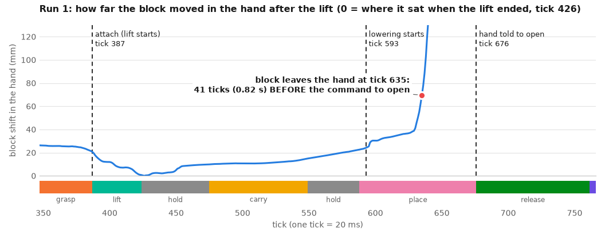
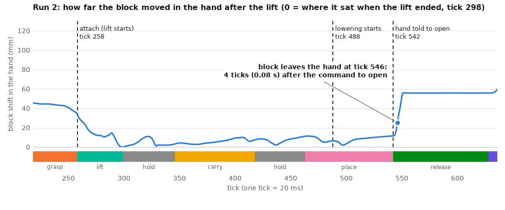

dashboard · status · trials on the 50 tasks · capability card · skill library · generated 2026-11-25 20:17 EST by python s2/s2loop/oneshot_page.py
acquire). No scripted finger closure.On this page: 3D viewer · run 1 (FAIL) · what went onto the capability card · run 2 (PASS) · the earlier one-shot test (two runs)
What is drawn. The solid block is the paperweight at its ACTUAL pose in the record; the pink translucent block is the same mesh at the pose the reference COMMANDED. The large axes are the COMMANDED wrist pose; the dark hand proxy (a palm patch, five two-piece fingers and small axes) is the ACTUAL palm pose and finger joints of the record. The thick lines are the generated trajectory, coloured by phase, with the skill call that made each phase named in the legend and in the readout: solid for the commanded wrist, dashed for the commanded object. The thin neutral lines are where the block and the palm really went. The part already played is drawn strong, the rest faint. The eight strips of the poster's rolled edge move as they did in the record.
The block is the paperweight's own visual mesh as the scene has it (16 triangles; it is a five-sided block, so nothing had to be simplified). The hand is a proxy, not the hand's mesh. The reference only defines an object pose of its own from the attach tick to the command to open (the block carried rigidly by the commanded wrist); before the attach tick it is the block's own pose, so the ghost and the dashed path are hidden there, as in film B. After the command to open the ghost stays, fainter, where the reference let go. "Aim of the place" is the point the program wrote into its own trace. Every tick is stored (one slider step = one tick = 20 ms); positions to 0.1 mm. The stored poses were checked against the record: the mesh centre placed by them is within 0.08 mm of the recorded one. A view can be linked: the address takes #run=1&tick=645 and follows the slider. Viewer and data: 0.95 MB, no library, nothing loaded from the network.
FAIL n = 1 · ran 2026-11-25, 18:50 to 18:59 EST · 1221 ticks used (921 by the program, the rest is the closing tail) of 1500 · one tick = 20 ms · run folder s2/dexharness/runs/live/daily50_t27_paperweight/20261125T235049Z-af8bd08c
Put the paperweight on the poster so it stops rolling back up.
the instruction the planner was given
propose_grasps, then choose the clip of the block's own shape that the policy was trained on.acquire with a lift of 0.08 m.transport to a hover above the rolled edge. This carry also climbed about 9 cm, so the block arrived high above the place.set_down onto the edge's pose (approach height 0.03 m, press 0.02 m), letting go at its end.clear_view: hand open and away. Targets were taken from the one look; nothing was looked at again on the way.How to read the ghost: from the attach tick to the command to open, the reference carries the block rigidly with the commanded wrist, so a gap of 2 to 4 cm while held is the block shifting and tilting in the fingers (most of it during the lift), not a loss. Before the attach tick the reference is the block's own pose and no ghost is drawn. After the command to open, the ghost stays, fainter, where the reference let go. Films show one frame every 3 ticks.

Computed for this page from the run's record: the block's position in the palm's frame, as the distance from where it sat when the lift ended. The block left the hand at tick 635, 41 ticks (0.82 s) before the command to open (tick 676). Largest shift while it was still held: 62.2 mm.
| segment | ticks | wrist speed, peak | lift asked | lowering: length and speed | standstill with the block in the hand | hand command | outcome | lost, against the command to open |
|---|---|---|---|---|---|---|---|---|
| acquire (approach+grasp+lift, policy clip follow) | 149 to 456 | 0.39 m/s | 0.080 m | — | not in the file | firm once (acquire settle) | tracked: held, thumb opposed, 7.8 N on the thumb; the block crept 28 mm in the fingers | — |
| transport (carry, free, hand level) | 475 to 548 | 0.24 m/s | — | — | not in the file | none | tracked: held through the carry | — |
| set_down (place onto poster curl + gentle release, press_m=0.02) | 588 to 796 | 0.29 m/s | — | the file gives only the last 41 rows at 0.05 m/s; the whole lowering is in the line under the table | not in the file | flexion_then_splay (release) | LOST: the block left the hand during the lowering, before the command to open; it ended about 17 cm from where it was aimed | 41 ticks (0.82 s) BEFORE the command to open: no finger on the block from tick 635, command at tick 676. The file's own tick is 628 (the first tick the block was more than 5 cm from the reference). |
| clear_view (empty-hand retreat/ending) | 820 to 920 | 0.39 m/s | — | — | not in the file | — | hand empty | — |
The lowering, computed again from the commanded wrist track: 12.2 cm down between ticks 593 and 669 (1.54 s), at up to 0.25 m/s; 9.7 cm of it in 0.54 s (ticks 598 to 624, faster than 6 cm/s). The wrist itself followed its reference within 2.83 mm over the whole run.
| phase | ticks | time | what S0 was asked (commanded wrist track) | palm off the reference, at most | outcome |
|---|---|---|---|---|---|
| hold / standstill | 0 to 152 | 3.06 s | stand still 3.06 s | 0.0 mm | tracked (palm within 0.0 mm of the reference) |
| approach | 153 to 268 | 2.32 s | reach for the block: wrist at up to 0.39 m/s, hand open | 2.1 mm | tracked (palm within 2.1 mm of the reference) |
| grasp | 269 to 386 | 2.36 s | close on the block following the grasp clip (S0 drives the fingers); wrist at up to 0.12 m/s | 1.8 mm | tracked (palm within 1.8 mm of the reference) |
| lift | 387 to 423 | 0.74 s | lift: wrist up 7.3 cm at up to 0.23 m/s | 1.9 mm | tracked: block in the hand, moved 20 mm in the grip |
| hold / standstill | 424 to 474 | 1.02 s | stand still 1.02 s with the block in the hand | 0.4 mm | tracked: block in the hand, moved 6 mm in the grip |
| carry | 475 to 548 | 1.48 s | carry 23 cm at up to 0.24 m/s, wrist height +91 mm | 2.1 mm | tracked: block in the hand, moved 8 mm in the grip |
| hold / standstill | 549 to 587 | 0.78 s | stand still 0.78 s with the block in the hand | 0.4 mm | tracked: block in the hand, moved 7 mm in the grip |
| place / lowering | 588 to 675 | 1.76 s | lower 12.2 cm in 1.54 s, down at up to 0.25 m/s | 1.6 mm | LOST: the block left the hand at tick 635, 41 ticks (0.82 s) BEFORE the command to open |
| release | 676 to 760 | 1.70 s | open the hand (flexion_then_splay), arm still, 1.70 s | 0.2 mm | the hand opens with nothing in it (block lost at tick 635) |
| retreat | 761 to 793 | 0.66 s | move away: wrist at up to 0.29 m/s, +8 cm in height | 2.2 mm | hand already empty (block lost at tick 635) |
| hold / standstill | 794 to 822 | 0.58 s | stand still 0.58 s | 0.5 mm | hand already empty (block lost at tick 635) |
| retreat | 823 to 917 | 1.90 s | move away: wrist at up to 0.39 m/s, +9 cm in height | 2.8 mm | hand already empty (block lost at tick 635) |
| hold / standstill | 918 to 920 | 0.06 s | stand still 0.06 s | 1.3 mm | hand already empty (block lost at tick 635) |
| hold / standstill | 921 to 1220 | 6.00 s | stand still 6.00 s (closing tail) | 0.5 mm | hand already empty (block lost at tick 635) |
Phases are the reference file's own; a stretch of 10 ticks or more with the commanded wrist still is shown as standstill. "Left the hand" is the tick after the last one with any finger or palm link in contact with the block.
# One-shot t27_paperweight (skill-discovery capture run, n=1).
# Instruction: "Put the paperweight on the poster so it stops rolling back up."
# Plan (card lines in comments):
# 1. propose_grasps on the compact ~6 cm block (the paperweight); prefer a TRAINED own-shape
# clip (card rule 1: own shape + trained kept 3/3; check thumb afterwards).
# 2. acquire it, lift_m=0.08 (card: lift 0.05-0.10 m; block rises ~0.07-0.13). Read held /
# grip_opposed / fingertip forces; branch (card rule 1, S4/S5).
# 3. ONE carry (transport) to a hover over the poster's curling edge, aim='object', 0.25 m/s
# cap of a policy grasp (capability table policy row); no hand command, no turn (rule 2, N2).
# 4. ONE place: set_down onto the curl's own pose with release, press_m=0.02 to press the
# raised lip down (card set_down: onto a soft curl is not_felt and presses it down ~2 cm;
# EXPERIENCE: a drop onto the lip flattened it and the block stayed on the poster edge).
# 5. Hand away: clear_view (fallback retreat+open). End hand open and away.
# Targets are taken as POSES from THIS one look so no re-localisation under the arm is needed.
# References are chained through each skill's execution.final_observation.
tr = {"plan": "grasp block #, carry to poster curl #, set_down onto curl + release, clear view",
"picked": {}, "grasp_choice": {}, "skills": [], "branch": [],
"note": "wrist track = record ref_palm; object track reconstructed from record xpos/xquat; "
"full (N,7) arrays assembled from record.npz after close"}
def dget(m, k):
return m[k] if (m is not None and k in m) else None
def dims(o):
return sorted([float(o.size[0]), float(o.size[1]), float(o.size[2])])
def cap(name, r):
row = {"skill": name, "ok": bool(r.ok)}
if r.error is not None:
row["err"] = r.error.code
dg = r.diagnostics
for k in ("rows", "latency_ticks", "segments", "held", "holding"):
if dg is not None and k in dg:
row[k] = dg[k]
if r.plan is not None and r.plan.trajectory is not None:
tj = r.plan.trajectory
pp = tj.palm_poses
row["traj_rows"] = int(len(pp))
row["seg_kinds"] = list(tj.segment_kinds)
row["seg_ends"] = list(tj.segment_ends)
row["palm_first"] = [round(float(x), 4) for x in pp[0]]
row["palm_last"] = [round(float(x), 4) for x in pp[-1]]
vd = r.verification.details if r.verification is not None else None
for k, nk in (("grip_opposed", "grip_opposed"), ("thumb_force_n", "thumb_force_n"),
("aimed", "aimed"), ("object_offset_by", "offset_by"), ("touch", "touch"),
("line_end_by", "line_end_by"), ("line_capped_m", "line_capped_m"),
("landed", "landed"), ("approach_raised_m", "approach_raised_m")):
v = dget(vd, k)
if v is not None:
row[nk] = v
fo = r.execution.final_observation if r.execution is not None else None
if fo is not None:
row["forces"] = [round(float(x), 2) for x in fo.robot_state.fingertip_force_n["right"]]
tr["skills"].append(row)
return fo
# ---- pick objects from the one look (code decides) ----
block = None
curl = None
for n, o in numbered.items():
if o.label and "mask part" in o.label:
continue
d = dims(o)
raised = float(o.top_z) - float(o.table_z)
if d[0] >= 0.04 and d[2] <= 0.095: # compact: all dims 4-9.5 cm -> paperweight
if block is None or d[2] < dims(numbered[block])[2]:
block = n
if d[2] >= 0.25 and raised >= 0.03: # long + raised -> a rolled/curling edge
if curl is None or float(o.center[0]) < float(numbered[curl].center[0]):
curl = n # most toward the robot (near the poster in front)
tr["picked"] = {"block": block, "curl": curl}
if block is None or curl is None:
tr["branch"].append("missing block or curl: nothing to do")
result = tr
else:
bk = numbered[block]
ct = [float(numbered[curl].center[0]), float(numbered[curl].center[1]), float(numbered[curl].top_z)]
tr["curl_spot_world"] = [round(x, 4) for x in ct]
curl_pose = Pose(ct, palm_down_pose(ct).quaternion_wxyz, "world")
# ---- grasp search (own step cost folded into acquire in one-shot) ----
g = propose_grasps(view, bk)
gi = None
for cand in g.grasps:
d = cand.diagnostics
if dget(d, "shape_match") == "own" and dget(d, "trained"):
gi = cand
break
if gi is None:
for cand in g.grasps:
if dget(cand.diagnostics, "shape_match") == "own":
gi = cand
break
if gi is None and g.grasps:
gi = g.grasps[0]
tr["grasp_choice"] = {"n_grasps": len(g.grasps),
"shape_match": dget(gi.diagnostics, "shape_match") if gi else None,
"trained": dget(gi.diagnostics, "trained") if gi else None,
"clip_source": dget(gi.diagnostics, "clip_source") if gi else None}
# ---- acquire ----
r = acquire(view, bk, grasp=gi, lift_m=0.08)
fo = cap("acquire", r)
held = dget(r.diagnostics, "held")
v = fo if fo is not None else view
if (not r.ok) or held == "no":
tr["branch"].append("grasp did not hold (held=%s): end with hand away" % str(held))
rc = clear_view(v)
cap("clear_view_fail", rc)
if not rc.ok:
cap("retreat_fail", retreat(v, distance_m=0.06))
result = tr
else:
tr["branch"].append("held=%s: carry to curl and place" % str(held))
# ---- one carry ---- (no hand command, no turn: rule 2 / N2)
rt = transport(v, curl_pose, hover_m=0.17)
fo2 = cap("transport", rt)
v2 = fo2 if fo2 is not None else v
held2 = dget(rt.diagnostics, "held")
if (not rt.ok) or held2 == "no":
tr["branch"].append("lost during carry (held=%s): end with hand away" % str(held2))
cap("clear_view_lost", clear_view(v2))
result = tr
else:
# ---- one place + gentle release onto the curl ----
rp = set_down(v2, curl_pose, onto=curl_pose, approach_height_m=0.03,
press_m=0.02, release=True, aim="object")
fo3 = cap("set_down", rp)
v3 = fo3 if fo3 is not None else v2
tr["branch"].append("placed: set_down ok=%s" % str(rp.ok))
# ---- hand away ----
rc = clear_view(v3)
cap("clear_view", rc)
if not rc.ok:
cap("retreat", retreat(v3, distance_m=0.08))
result = tr
Run 1's failure became one line on the capability card that the planner reads before it plans. In short: "going down with a held thing: keep the lowering short".
Going DOWN with a held thing. A policy grasp that survived the lift and a level carry lost the block during a lowering of about 10 cm in under a second (12 cm in all, wrist down at up to 0.25 m/s): it crept 2 cm in the hand and left it 13 cm above the table, before any command to open [measured n=1 live, one-shot run]; the same loss was seen in three other set-downs today [measured n=3 live; one object]. A 2.5 cm lowering at 0.20 m/s kept it 4 of 4 [measured n=4 live; one start, not blind]; a 3.4 cm lowering at 0.05 m/s after a carry at lift height kept it and the place held [measured n=1 live, one-shot run]. Keep the lowering short: set the lift by the height of the place, carry level at that height (hover close above the place), then lower a few centimetres.
The card's line as it reads now; it was written after run 1 and has since also taken run 2's result. Its figures for run 1 ("10 cm in 0.8 s") are the card's; this page's own reading of the same record is 12.2 cm in 1.54 s, 9.7 cm of it in 0.54 s.
The two plan changes it caused in run 2:
Same task, same block, same start in both runs; n = 1 each. This shows the changed plan passed once. It does not show how often it would.
PASS n = 1 · ran 2026-11-25, 19:17 to 19:25 EST (the one step was submitted 5.5 minutes after the start) · 1064 ticks used (764 by the program, the rest is the closing tail) of 1500 · one tick = 20 ms · run folder s2/dexharness/runs/live/daily50_t27_paperweight/20261126T001716Z-b3129b5c
Put the paperweight on the poster so it stops rolling back up.
the instruction the planner was given
propose_grasps, then choose the block's own-shape clip the policy was trained on.acquire with the lift set by the place: the edge's height + 3.5 cm = 0.087 m. Read held, grip_opposed and the fingertip forces and branch on them. No hand command afterwards.transport, level, at the hover that keeps the block at the height the lift left it (0.062 m over the edge's top): 0.22 m at up to 0.24 m/s.set_down (approach height 0.03 m, press 0.02 m, release at the end): a lowering of a few centimetres at 5 cm/s that lets go where it ends.palm_at_f_cut) as a mapping; the field is a tuple. So its check of the place pose by solve_ik was skipped (written into its own trace, not fatal) and the hover was computed from the lift instead. The first hover happened to be accepted.set_down form (onto the edge as an object) was refused at planning, a thumb link too close to the edge; nothing ran. The second form (onto a pose on the edge's top) ran. The hand stood loaded for 0.9 s meanwhile.How to read the ghost: from the attach tick to the command to open, the reference carries the block rigidly with the commanded wrist, so a gap of 2 to 4 cm while held is the block shifting and tilting in the fingers (most of it during the lift), not a loss. Before the attach tick the reference is the block's own pose and no ghost is drawn. After the command to open, the ghost stays, fainter, where the reference let go. Films show one frame every 3 ticks.

Computed for this page from the run's record: the block's position in the palm's frame, as the distance from where it sat when the lift ended. The block left the hand at tick 546, 4 ticks (0.08 s) after the command to open (tick 542). Largest shift while it was still held: 11.5 mm.
| segment | ticks | wrist speed, peak | lift asked | lowering: length and speed | standstill with the block in the hand | hand command | outcome | lost, against the command to open |
|---|---|---|---|---|---|---|---|---|
| grasp (clip follow) | 140 to 257 | 0.12 m/s | — | 1.9 cm at up to 0.10 m/s | 0.00 s | s0 (0 changes inside the segment) | tracked | — |
| lift | 258 to 298 | 0.22 m/s | 0.080 m | — | 0.02 s | firm (0 changes inside the segment) | tracked | — |
| standstill after lift (settle + one firm) | 299 to 329 | 0.00 m/s | — | — | 0.62 s | firm (0 changes inside the segment) | tracked | — |
| standstill, loaded hand (planning latency before 0002-transport) | 330 to 345 | 0.00 m/s | — | — | 0.32 s | firm (0 changes inside the segment) | tracked | — |
| level carry | 346 to 417 | 0.24 m/s | — | 0.3 cm at up to 0.02 m/s | 0.08 s | firm (0 changes inside the segment) | tracked | — |
| standstill, loaded hand (planning latency before 0004-set_down) | 418 to 462 | 0.00 m/s | — | — | 0.90 s | firm (0 changes inside the segment) | tracked | — |
| lowering | 463 to 541 | 0.05 m/s | — | 3.4 cm at up to 0.05 m/s | 0.14 s | firm (0 changes inside the segment) | tracked | — |
| release (flexion_then_splay, arm still) | 542 to 627 | 0.00 m/s | — | — | 1.72 s | flexion_then_splay (0 changes inside the segment) | released on command (left the hand at tick 546, 4 ticks after the open command) | not lost: the block left the hand at tick 546, 4 ticks AFTER the command to open (tick 542) |
The lowering, computed again from the commanded wrist track: 3.4 cm down between ticks 488 and 535 (0.96 s), at up to 0.05 m/s. The wrist itself followed its reference within 2.16 mm over the whole run.
| phase | ticks | time | what S0 was asked (commanded wrist track) | palm off the reference, at most | outcome |
|---|---|---|---|---|---|
| hold / standstill | 0 to 19 | 0.40 s | stand still 0.40 s | 0.0 mm | tracked (palm within 0.0 mm of the reference) |
| approach | 20 to 139 | 2.40 s | reach for the block: wrist at up to 0.39 m/s, hand open | 2.1 mm | tracked (palm within 2.1 mm of the reference) |
| grasp | 140 to 257 | 2.36 s | close on the block following the grasp clip (S0 drives the fingers); wrist at up to 0.12 m/s | 1.8 mm | tracked (palm within 1.8 mm of the reference) |
| lift | 258 to 298 | 0.82 s | lift: wrist up 8.0 cm at up to 0.22 m/s | 1.7 mm | tracked: block in the hand, moved 33 mm in the grip |
| hold / standstill | 299 to 345 | 0.94 s | stand still 0.94 s with the block in the hand | 0.5 mm | tracked: block in the hand, moved 10 mm in the grip |
| carry | 346 to 417 | 1.44 s | carry 22 cm at up to 0.24 m/s, wrist height -3 mm | 2.1 mm | tracked: block in the hand, moved 11 mm in the grip |
| hold / standstill | 418 to 462 | 0.90 s | stand still 0.90 s with the block in the hand | 0.4 mm | tracked: block in the hand, moved 12 mm in the grip |
| place / lowering | 463 to 541 | 1.58 s | lower 3.4 cm in 0.96 s, down at up to 0.05 m/s | 0.7 mm | tracked: block in the hand, moved 11 mm in the grip |
| release | 542 to 627 | 1.72 s | open the hand (flexion_then_splay), arm still, 1.72 s | 0.4 mm | released on command: the block left the hand at tick 546, 4 ticks after it |
| retreat | 628 to 662 | 0.70 s | move away: wrist at up to 0.29 m/s, +8 cm in height | 2.2 mm | hand empty |
| hold / standstill | 663 to 679 | 0.34 s | stand still 0.34 s | 0.1 mm | hand empty |
| retreat | 680 to 763 | 1.68 s | move away: wrist at up to 0.39 m/s, +21 cm in height | 2.1 mm | hand empty |
| hold / standstill | 764 to 1063 | 6.00 s | stand still 6.00 s (closing tail) | 0.2 mm | hand empty |
Phases are the reference file's own; a stretch of 10 ticks or more with the commanded wrist still is shown as standstill. "Left the hand" is the tick after the last one with any finger or palm link in contact with the block.
palm_at_f_cut once and used it. Here the skipped check cost nothing only by luck.# ONE-SHOT program, t27_paperweight (run 2: plan shaped by the capability card).
# Plan: measure -> propose_grasps -> acquire (S0) -> ONE level, LOW carry -> short set_down onto the curl
# (lets go there) -> hand open and away. Three calls between grasp and release (CARD 3.7).
# CARD = s2/outputs/harness_round/envelope/prior/CAPABILITY_CARD.md ; LIB = trials/LIBRARY.md
trace = {"stage": "start", "branches": []}
result = trace
def L3(a):
return [float(a[0]), float(a[1]), float(a[2])]
def ticks_left():
return int(get_task_context().ticks_remaining)
def forces(obs):
try:
return [round(float(x), 2) for x in obs.robot_state.fingertip_force_n['right']]
except Exception:
return None
def brief(r, keys=()):
d = {"ok": bool(r.ok)}
try:
if r.error is not None:
d["err"] = str(r.error.code)
d["msg"] = str(r.error.message)[:260]
dg = r.diagnostics
for k in ("held", "held_belief", "rows", "latency_ticks", "stage", "failed_segment", "aimed",
"object_offset_by", "clip_source", "clip_trained", "lift_planned_m", "clip_rise_m",
"line_end_by", "line_capped_m", "line_capped_by", "approach_raised_m", "grip_warning"):
v = dg.get(k)
if v is not None:
d[k] = v if (v is True or v is False) else str(v)[:120]
if r.verification is not None:
d["passed"] = r.verification.passed
vd = r.verification.details
for k in ("held", "grip_opposed", "thumb_force_n", "grip_loaded", "fingers_gripping", "touch",
"landed", "landed_offset_m", "landed_size_m", "landed_top_z", "dropped_during_descent",
"dropped_during_transport", "hand_visible_fraction", "why_unknown", "line_capped_m",
"descent_stopped_on", "seen_low_above_top_m") + tuple(keys):
v = vd.get(k)
if v is not None:
d["v_" + k] = v if (v is True or v is False) else str(v)[:120]
if r.execution is not None:
d["steps"] = int(r.execution.steps_executed)
d["guard_stop"] = bool(r.execution.stopped_on_guard)
if r.execution.final_observation is not None:
d["tip_n"] = forces(r.execution.final_observation)
except Exception as e:
d["brief_error"] = str(e)[:160]
return d
def open_dwell(obs):
# letting go / opening only: a plain dwell with 'open' (allowed: not a grasping command)
p = plan_motion(obs, [MotionSegment('dwell', duration_ticks=40, hand=HandCommand('open', ramp_ticks=20))])
if p.ok:
e = execute_plan(p)
return e.final_observation if e.final_observation is not None else obs
return obs
obs = view
start_palm = view.robot_state.palm_poses['right']
trace["ticks_at_start"] = ticks_left()
# ---------------------------------------------------------------- 1. measure (0 ticks, before any motion) [CARD 0.5]
block = None
curl = None
try:
best_b = 1e9
best_c = 1e9
for n, o in numbered.items():
s = sorted([float(o.size[0]), float(o.size[1]), float(o.size[2])])
h = float(o.top_z) - float(o.table_z)
c = L3(o.center)
# the paperweight: a free 6 x 7 x 5 cm block on the right-hand side (seen at about (-0.36, -0.40))
eb = abs(s[0] - 0.054) + abs(s[1] - 0.060) + abs(s[2] - 0.072) + 0.5 * math.hypot(c[0] + 0.36, c[1] + 0.40)
if eb < best_b and s[2] < 0.10 and h > 0.035:
best_b = eb
block = o
trace["block_n"] = n
# the curled poster edge: a long low ridge 30 x 5 x 5 cm (seen at about (-0.35, -0.205))
ec = abs(s[2] - 0.30) + abs(s[1] - 0.05) + abs(s[0] - 0.05) + 0.5 * math.hypot(c[0] + 0.35, c[1] + 0.205)
if ec < best_c and s[2] > 0.15 and h > 0.02 and h < 0.09:
best_c = ec
curl = o
trace["curl_n"] = n
except Exception as e:
trace["measure_error"] = str(e)[:200]
go = block is not None and curl is not None
if not go:
trace["branches"].append("abort: block or curl not found")
if go:
bc = L3(block.center)
cc = L3(curl.center)
table_z = float(block.table_z)
curl_top = float(curl.top_z)
trace["block"] = {"c": [round(v, 3) for v in bc], "size": [round(float(v), 3) for v in block.size], "top": round(float(block.top_z), 3)}
trace["curl"] = {"c": [round(v, 3) for v in cc], "size": [round(float(v), 3) for v in curl.size], "top": round(curl_top, 3)}
# the raised lip: centroid of the curl's highest points near the block's own x (EXPERIENCE: land over the
# raised lip itself, not the flat middle). Target x = the block's x: the carry is then a straight 0.19 m.
cx_lo = cc[0] - 0.5 * float(max(curl.size[0], curl.size[1])) + 0.07
cx_hi = cc[0] + 0.5 * float(max(curl.size[0], curl.size[1])) - 0.07
tx = min(max(bc[0], cx_lo), cx_hi)
lip_y = cc[1]
try:
ys = [float(p[1]) for p in curl.points if abs(float(p[0]) - tx) < 0.06 and float(p[2]) > curl_top - 0.012]
if len(ys) >= 5:
lip_y = sum(ys) / len(ys)
trace["lip_points"] = len(ys)
except Exception as e:
trace["lip_error"] = str(e)[:160]
ty = 0.5 * (lip_y + cc[1]) # between the highest line and the ridge's middle: the 7 cm block covers both
trace["lip_y"] = round(lip_y, 3)
trace["target"] = [round(tx, 3), round(ty, 3), round(curl_top, 3)]
# lift: CARD "Lift height: ask 0.05 to 0.10 m" and "Going DOWN: keep the lowering short": lift only as high
# as the ridge needs (ridge height + 3.5 cm), so that the carry is LEVEL and the lowering a few centimetres.
LIFT = min(0.10, max(0.06, (curl_top - table_z) + 0.035))
trace["lift_m"] = round(LIFT, 3)
# ---------------------------------------------------------------- 2. choose the grasp (0 ticks) [CARD 0.1, LIB S2/S4]
gsel = None
pf_pos = None
if go:
try:
g = propose_grasps(view, block, max_candidates=6)
trace["propose_ok"] = bool(g.ok)
if not g.ok and g.error is not None:
trace["propose_err"] = str(g.error.code) + ": " + str(g.error.message)[:200]
glist = list(g.grasps)
# CARD 0.1 + acquire card: the class is chosen by the SEEN size alone; this five-sided block's own clip
# is a 'penta' clip (thumb in the grip, kept 19 to 21 s); a box clip on it is a grip without the thumb
# (lost in 6 of 6). If no penta grasp was offered, ask for that class by name BEFORE binding (LIB S4).
try:
trace["class_candidates"] = str(g.diagnostics.get("class_candidates"))[:700]
if len([x for x in glist if "penta" in (str(x.clip_id) + str(x.object_class)).lower()]) == 0:
names = []
for tok in str(g.diagnostics.get("class_candidates")).replace('"', "'").split("'"):
if "penta" in tok.lower() and " " not in tok and tok not in names:
names.append(tok)
trace["penta_classes_asked"] = names
for nm in names[:2]:
g2 = propose_grasps(view, block, max_candidates=4, object_class=nm)
if g2.ok:
glist = glist + list(g2.grasps)
except Exception as e:
trace["penta_ask_error"] = str(e)[:160]
cands = []
for i, gr in enumerate(glist):
dg = gr.diagnostics
row = {"i": i, "clip": str(gr.clip_id), "cls": str(gr.object_class), "trained": dg.get("trained"),
"penta": "penta" in (str(gr.clip_id) + str(gr.object_class)).lower(),
"src": str(dg.get("clip_source")), "shape": str(dg.get("shape_match")),
"raise": round(float(gr.raise_m), 3), "psi": round(float(gr.psi_rad), 2)}
pp = None
pq = None
try:
pa = dg.get("palm_at_f_cut")
try:
pp = L3(pa["position"])
pq = [float(v) for v in pa["quaternion_wxyz"]]
except Exception:
pp = L3(pa.position)
pq = [float(v) for v in pa.quaternion_wxyz]
if not (pp[2] > table_z + 0.01 and pp[2] < table_z + 0.35 and math.hypot(pp[0] - bc[0], pp[1] - bc[1]) < 0.20):
row["pf_raw"] = [round(v, 3) for v in pp]
pp = None
raise ValueError("palm_at_f_cut is not a world pose near the block")
off = [pp[0] - bc[0], pp[1] - bc[1]]
row["palm_off"] = [round(off[0], 3), round(off[1], 3), round(pp[2] - table_z, 3)]
# LIB S2: the palm/flange side must end over free space at the place. The ridge runs along x,
# so a palm offset mostly along y keeps the flange beside the ridge, not on it.
row["flange_beside"] = abs(off[1]) >= abs(off[0])
place_palm = [tx + off[0], ty + off[1], pp[2] + LIFT]
ik = solve_ik(view, Pose(place_palm, pq, 'world'), hand='close') # CARD 0.7: check the goal first
row["place_ik"] = bool(ik.ok)
if not ik.ok and ik.error is not None:
row["place_ik_err"] = str(ik.error.code)
except Exception as e:
row["pf_error"] = str(e)[:120]
row["pp"] = pp
cands.append((row, gr))
trace["grasps"] = [dict([(k, v) for k, v in c[0].items() if k != "pp"]) for c in cands]
def rank(c):
r0 = c[0]
# trained own clip first (CARD 0.1: trained kept 3 of 3, untrained 2 of 7); then raise 0 (LIB S4);
# then the place reachable with this hand turn and the flange beside the ridge (LIB S2).
return (0 if r0.get("penta") else 1, 0 if (r0.get("shape") == "own") else 1, 0 if r0.get("trained") else 1,
0 if r0.get("raise", 1.0) < 0.005 else 1,
0 if r0.get("place_ik") else 1, 0 if r0.get("flange_beside") else 1, r0["i"])
if len(cands) > 0:
cands = sorted(cands, key=rank)
gsel = cands[0][1]
pf_pos = cands[0][0].get("pp")
trace["grasp_chosen"] = dict([(k, v) for k, v in cands[0][0].items() if k != "pp"])
else:
go = False
trace["branches"].append("abort: no grasp offered (CARD 0.5: there is no other way to take hold)")
except Exception as e:
trace["propose_exception"] = str(e)[:240]
gsel = None
# ---------------------------------------------------------------- 3. acquire: the ONLY grasp (S0) [CARD 0.5]
holding = False
r_acq = None
if go:
trace["stage"] = "acquire"
try:
# a fresh observation right before the grasp: the measuring above is then not charged as waiting
try:
ob2 = get_observation()
if gsel is not None:
r_acq = acquire(ob2, block, grasp=gsel, lift_m=LIFT)
else:
r_acq = acquire(ob2, block, lift_m=LIFT)
except Exception as e:
r_acq = None
trace["acquire_fresh_obs_exception"] = str(e)[:200]
if r_acq is None or ((not r_acq.ok) and r_acq.execution is None):
if r_acq is not None:
trace["acquire_first_refusal"] = brief(r_acq)
if gsel is not None:
r_acq = acquire(view, block, grasp=gsel, lift_m=LIFT)
else:
r_acq = acquire(view, block, lift_m=LIFT)
trace["acquire"] = brief(r_acq)
if r_acq.execution is not None and r_acq.execution.final_observation is not None:
obs = r_acq.execution.final_observation
tip = forces(obs)
held = str(r_acq.diagnostics.get("held"))
opposed = None
if r_acq.verification is not None:
opposed = r_acq.verification.details.get("grip_opposed")
n2 = 0 if tip is None else len([x for x in tip if x >= 2.0])
trace["grip"] = {"held": held, "grip_opposed": opposed, "tip_n": tip, "n_over_2N": n2}
# CARD 0.1: read held first, then grip_opposed and the fingertip forces; LIB S4: with the thumb not in the
# grip go on only if at least three fingertips read 2 N or more, and at once. CARD 0.2: no hand command.
if r_acq.ok and held in ("yes", "unknown") and (opposed is True or n2 >= 3):
holding = True
trace["branches"].append("grasp accepted: held " + held + ", opposed " + str(opposed))
elif r_acq.ok and held in ("yes", "unknown"):
holding = True
trace["branches"].append("weak grip (thumb out, <3 fingertips at 2 N): carry at once, expect a loss (CARD 0.1)")
else:
trace["branches"].append("grasp failed: " + held + "; no budget for a second grasp cycle (LIB ticks: 840 a cycle)")
except Exception as e:
trace["acquire_exception"] = str(e)[:240]
# ---------------------------------------------------------------- 4. ONE level carry, low [CARD 1 speed / down]
carried = False
hover_used = None
if holding:
trace["stage"] = "transport"
try:
# level hover: the held box's centre stays at the height the lift left it at, so the carry itself
# neither rises nor lowers. CARD "Palm speed, holding": skill cap 0.25 m/s, level carries at 0.25 kept
# 5 of 5 -> default limits. CARD "Carry distance": 0.29 to 0.53 m kept; this carry is about 0.19 m.
rise = LIFT
try:
pz = float(obs.robot_state.palm_poses['right'].position[2])
if pf_pos is not None:
rise = pz - pf_pos[2]
except Exception:
rise = LIFT
trace["palm_rise_raw_m"] = round(rise, 3)
if rise < LIFT - 0.03 or rise > LIFT + 0.04:
rise = LIFT
trace["palm_rise_m"] = round(rise, 3)
h0 = max(0.045, bc[2] + rise - curl_top)
goal = Pose([tx, ty, curl_top], [1.0, 0.0, 0.0, 0.0], 'world')
tried = []
r_tr = None
# CARD "Going DOWN": hover close above the place. Lowest first; a refused plan costs no ticks.
for hv in (h0, h0 + 0.02, h0 + 0.04, h0 + 0.07, 0.17):
r_tr = transport(obs, goal, hover_m=float(hv))
tried.append([round(float(hv), 3), bool(r_tr.ok), None if r_tr.error is None else str(r_tr.error.code)])
if r_tr.execution is not None:
hover_used = float(hv)
break
trace["transport_tried"] = tried
trace["transport"] = brief(r_tr, keys=("object_offset_m", "palm_goal_xy", "object_goal_xy"))
if r_tr.execution is not None and r_tr.execution.final_observation is not None:
obs = r_tr.execution.final_observation
tip = forces(obs)
n1 = 0 if tip is None else len([x for x in tip if x >= 1.0])
th = None if r_tr.verification is None else r_tr.verification.details.get("held")
trace["after_carry"] = {"held": str(th), "tip_n": tip, "n_over_1N": n1, "hover_m": hover_used}
# LIB S5: believe the fingertips: three or more loaded = something is gripped.
if r_tr.execution is not None and str(th) != "no" and n1 >= 3:
carried = True
elif r_tr.execution is not None and str(th) != "no" and r_tr.ok:
carried = True
trace["branches"].append("carry ended with <3 loaded fingertips: set down anyway, at once")
elif r_tr.execution is None:
trace["branches"].append("carry refused at every hover: let go where the hand is")
else:
holding = False
trace["branches"].append("lost in the carry (held no / no load): hand opened and taken away")
except Exception as e:
trace["transport_exception"] = str(e)[:240]
# ---------------------------------------------------------------- 5. short lowering onto the ridge, let go there
released = False
if holding and carried:
trace["stage"] = "set_down"
try:
# CARD "Going DOWN": a 2.5 cm lowering at 0.20 m/s kept 4 of 4; 10 cm in 0.8 s lost it. So the plain
# (fast) part of set_down is kept to about 2 cm by approach_height_m; the rest is its guarded line at
# 5 cm/s. CARD 0.3: set down before letting go; a paper curl is not felt (not_felt is expected) and
# is pressed flat by the thing. press_m 0.02: the line may follow the paper down.
# CARD "Release mode"/0.3: expect 2 to 6 cm where it ends: the 30 cm ridge leaves room along x.
appr = min(0.12, max(0.03, hover_used - 0.03 - 0.02))
trace["approach_height_m"] = round(appr, 3)
r_sd = None
tries = []
for onto in (curl, goal):
r_sd = set_down(obs, goal, onto=onto, approach_height_m=float(appr), press_m=0.02, release=True)
tries.append([bool(r_sd.ok), None if r_sd.error is None else str(r_sd.error.code)])
if r_sd.execution is not None:
break
trace["set_down_tried"] = tries
trace["set_down"] = brief(r_sd)
if r_sd.execution is not None:
released = True
if r_sd.execution.final_observation is not None:
obs = r_sd.execution.final_observation
else:
trace["branches"].append("set_down refused twice: let go in place from the low hover (LIB S7/S8)")
except Exception as e:
trace["set_down_exception"] = str(e)[:240]
if holding and not released:
# still (maybe) holding: let go where the hand is, without pushing (release_in_place relaxes, then opens)
trace["stage"] = "release_in_place"
if not carried:
try:
back = Pose([bc[0], bc[1], table_z], [1.0, 0.0, 0.0, 0.0], 'world')
r_bk = set_down(obs, back, onto=back, approach_height_m=0.03, release=True) # CARD 0.3
trace["set_down_back_at_pick"] = brief(r_bk)
if r_bk.execution is not None:
released = True
if r_bk.execution.final_observation is not None:
obs = r_bk.execution.final_observation
except Exception as e:
trace["set_down_back_exception"] = str(e)[:200]
if holding and not released:
try:
r_rl = release_in_place(obs, back_m=0.03, rise_m=0.08, look=False)
trace["release_in_place"] = brief(r_rl)
if r_rl.execution is not None:
released = True
if r_rl.execution.final_observation is not None:
obs = r_rl.execution.final_observation
except Exception as e:
trace["release_exception"] = str(e)[:240]
# ---------------------------------------------------------------- 6. ending: hand open and away [LIB S10]
trace["stage"] = "ending"
try:
hp = [float(x) for x in obs.robot_state.hand_joint_positions['right']]
trace["hand_mean_rad_before_end"] = round(sum(hp) / len(hp), 3)
if (not released) and r_acq is not None and r_acq.execution is not None:
obs = open_dwell(obs)
trace["branches"].append("opened the hand by a plain dwell")
r_end = move_to_pose(obs, start_palm, hand=HandCommand('open', ramp_ticks=20))
trace["end_move"] = brief(r_end)
if r_end.execution is None:
r_end = clear_view(obs)
trace["end_clear_view"] = brief(r_end)
if r_end.execution is None:
r_end = retreat(obs, distance_m=0.06)
trace["end_retreat"] = brief(r_end)
if r_end.execution is not None and r_end.execution.final_observation is not None:
obs = r_end.execution.final_observation
except Exception as e:
trace["ending_exception"] = str(e)[:240]
# ---------------------------------------------------------------- 7. what the head camera shows at the end (0 ticks)
try:
seen = []
if go:
for o in locate_objects(obs):
c = L3(o.center)
if math.hypot(c[0] - tx, c[1] - ty) < 0.22 or math.hypot(c[0] - bc[0], c[1] - bc[1]) < 0.08:
seen.append({"c": [round(v, 3) for v in c], "size": [round(float(v), 3) for v in o.size],
"top_above_table": round(float(o.top_z) - float(o.table_z), 3), "label": str(o.label)[:40]})
trace["end_seen_near_place"] = seen
except Exception as e:
trace["end_look_exception"] = str(e)[:200]
trace["ticks_left_end"] = ticks_left()
trace["stage"] = "done"
result = trace
The first two programs written under the one-shot rule. Shorter entries: the plain head-camera film only. n = 1 each.
PASS n = 1 · ran 2026-11-25, from 16:54 EST · 1307 ticks used by the end of the program of 1500 · run folder s2/dexharness/runs/live/daily50_t19_jar_drawer/20261125T215423Z-9cb92c57
acquire, transport, release_in_place, a move beside the drawer, slide to close it, a move away.# ONE-SHOT PROGRAM, task t19_jar_drawer: "Put the cream jar in the drawer and close it."
#
# What the one look showed (head picture and object list of `start`, tick 0):
# #0 a wooden cabinet near the robot, 20 x 35 x 10 cm, with its drawer pulled out toward the picture's right
# (world -y): mask part #14 is the body, #15 the open drawer (grey floor seen), #11 the knob on its front;
# #19 (mask part 2/2 of cluster #6) the cream jar, LYING on its side on a folded cloth (#18), 4 cm beyond the
# drawer front; class by seen size box60.
# Plan (S0 = the tracking policy; card = envelope/prior/CAPABILITY_CARD.md; LIB = trials/LIBRARY.md):
# 1 measure the drawer from the cabinet's points, 0 ticks (LIB S1, card rule 5)
# 2 propose_grasps on the jar's own mask part; prefer own shape, then a trained clip,
# then a clip from whose palm orientation the place is reachable (solve_ik) (card rule 1, LIB S2 S3)
# 3 acquire(lift_m=0.08): the only grasp; read held, grip_opposed, fingertip forces (card rule 5, lift 0.05-0.10)
# 4 branch: good grip or >=3 fingertips at 2 N -> carry at once; ~1 N -> hold 0.4 s and look;
# held unknown -> lift 3 cm and look; nothing held -> open, leave, stop (card rule 1, LIB S4 S5)
# 5 ONE level transport (policy row, 0.25 m/s, no hand command, no turn) to the lowest
# hover the planner accepts over the middle of the opening (card s.1 speed, LIB S7)
# 6 release_in_place(look=False) over the drawer: the walls keep the 2-6 cm error (card rule 3, LIB S7)
# 7 short move beside the drawer front = clean view; check the jar inside by depth (LIB S9 S10)
# 8 slide the cabinet's drawer shut: one fist stroke, opening + 2.5 cm, guard 0.5 (LIB P2, slide card)
# 9 move away with the hand opening; check the cabinet got shorter (LIB S10)
# Not used: grasp_scripted, any finger closure of my own, a second firm, a turn of the loaded hand.
T = {'task': 't19_jar_drawer', 'plan': [], 'steps': [], 'branches': [], 'notes': []}
result = T
def main(view, numbered, T, acquire=acquire, transport=transport, release_in_place=release_in_place,
set_down=set_down, slide=slide, move_to_pose=move_to_pose, retreat=retreat, clear_view=clear_view,
hold=hold, lift=lift, propose_grasps=propose_grasps, solve_ik=solve_ik, plan_motion=plan_motion,
execute_plan=execute_plan, get_observation=get_observation, get_task_context=get_task_context,
locate_objects=locate_objects, localize_object=localize_object, estimate_in_hand=estimate_in_hand,
Pose=Pose, HandCommand=HandCommand, MotionSegment=MotionSegment, palm_down_pose=palm_down_pose,
math=math):
steps = T['steps']
branches = T['branches']
notes = T['notes']
S = {'hand': 'open', 'maybe_holding': False, 'obs': view, 'pose_b': None, 'moved': False}
# ------------------------------------------------------------------ small helpers
def cut(s, n=160):
s = str(s)
if len(s) > n:
return s[:n]
return s
def plain(v, depth=0):
if v is None or v is True or v is False:
return v
try:
sv = str(v)
except Exception:
return '?'
if sv == 'True':
return True
if sv == 'False':
return False
try:
if v == sv:
return cut(sv, 200)
except Exception:
pass
try:
f = float(v)
if f != f or f > 1e12 or f < -1e12:
return cut(sv, 20)
return round(f, 4)
except Exception:
pass
if depth < 2:
try:
out = []
for x in v:
out.append(plain(x, depth + 1))
if len(out) >= 8:
break
return out
except Exception:
pass
return cut(sv, 120)
def left():
try:
return int(get_task_context().ticks_remaining)
except Exception:
return -1
def say(text):
branches.append(text)
print('BRANCH', text)
def note(text):
notes.append(cut(text, 300))
print('NOTE', cut(text, 300))
def now():
# a fresh look right before a skill: the skill is then charged for its own planning only
try:
o = get_observation()
S['obs'] = o
return o
except Exception as e:
note('get_observation: ' + cut(repr(e), 120))
return S['obs']
def forces(obs):
try:
fm = obs.robot_state.fingertip_force_n
if fm is None:
return None
return [round(float(x), 2) for x in fm['right']]
except Exception:
return None
def nload(f, thr):
if f is None:
return -1
return sum(1 for x in f if x >= thr)
def ran(r):
try:
if r.execution is None:
return 0
return int(r.execution.steps_executed)
except Exception:
return 0
def after(r):
o = None
try:
if r.execution is not None:
o = r.execution.final_observation
except Exception:
o = None
if o is None:
o = now()
S['obs'] = o
return o
def dget(r, key):
try:
return r.diagnostics.get(key)
except Exception:
return None
def vget(r, key):
try:
if r.verification is None:
return None
return r.verification.details.get(key)
except Exception:
return None
def rec(name, r, extra=None):
d = {'skill': name}
try:
d['ok'] = bool(r.ok)
except Exception:
d['ok'] = None
try:
if r.error is not None:
d['err'] = str(r.error.code)
d['why'] = cut(r.error.message, 200)
try:
for k in ('failure_kind', 'reason', 'nearest_link', 'scene_object'):
v = r.error.details.get(k)
if v is not None:
d[k] = plain(v)
except Exception:
pass
except Exception:
pass
for k in ('rows', 'latency_ticks', 'stage', 'failed_segment'):
v = dget(r, k)
if v is not None:
d[k] = plain(v)
d['ran'] = ran(r)
try:
if r.verification is not None:
d['ver'] = plain(r.verification.passed)
except Exception:
pass
if extra is not None:
for k in extra:
d[k] = plain(extra[k])
d['left'] = left()
steps.append(d)
print('STEP', d)
if d['ran'] > 0:
S['moved'] = True
return d
def lab(o):
try:
return str(o.label or '')
except Exception:
return ''
def cxy(o):
return float(o.center[0]), float(o.center[1])
def fsize(o):
return float(o.size[0]), float(o.size[1]), float(o.size[2])
def pct(vals, q):
s = sorted(vals)
if len(s) == 0:
return None
return s[int(q * (len(s) - 1))]
def qrot(q, v):
w, x, y, z = q
ax = y * v[2] - z * v[1]
ay = z * v[0] - x * v[2]
az = x * v[1] - y * v[0]
bx = y * az - z * ay
by = z * ax - x * az
bz = x * ay - y * ax
return [v[0] + 2 * (w * ax + bx), v[1] + 2 * (w * ay + by), v[2] + 2 * (w * az + bz)]
def vec(v, n):
try:
out = [float(x) for x in v]
if len(out) == n:
return out
except Exception:
pass
return None
def amin(a):
try:
return float(a.min())
except Exception:
return float(min(a.tolist()))
def amax(a):
try:
return float(a.max())
except Exception:
return float(max(a.tolist()))
def cnt(m):
try:
return int(m.sum())
except Exception:
return sum(1 for b in m.tolist() if b)
# ------------------------------------------------------------------ 0. the things of the first look
objs0 = []
try:
for n, o in numbered.items():
objs0.append((int(n), o))
except Exception as e:
note('numbered unreadable (' + cut(repr(e), 80) + '): locate_objects instead')
k = 0
for o in locate_objects(view):
objs0.append((k, o))
k += 1
def pick(x, y, tol, want):
best = None
for n, o in objs0:
if lab(o).startswith('remembered'):
continue
ox, oy = cxy(o)
d = math.sqrt((ox - x) ** 2 + (oy - y) ** 2)
if d > tol:
continue
if not want(o):
continue
if best is None or d < best[0]:
best = (d, n, o)
if best is None:
return None, None
return best[1], best[2]
def jarlike(o):
sx, sy, sz = fsize(o)
m = max(sx, sy)
return m >= 0.035 and m <= 0.11 and sz >= 0.03 and sz <= 0.09
# the jar: its OWN mask part (LIB S3: grasp the part, not the cluster with the cloth), by place and size
jar_n, jar = pick(-0.394, -0.436, 0.06, lambda o: ('mask part' in lab(o)) and jarlike(o))
if jar is None:
jar_n, jar = pick(-0.394, -0.436, 0.06, jarlike)
if jar is not None:
say('jar: no mask part at its place, took the jar-sized object #' + str(jar_n))
if jar is None:
try:
lz = localize_object(view, 'the cream jar')
if lz.ok and lz.estimate is not None and jarlike(lz.estimate):
jar = lz.estimate
jar_n = -1
say('jar: found by words through the mask service (weak matcher: size checked)')
except Exception as e:
note('localize_object: ' + cut(repr(e), 120))
# the cabinet cluster (body + open drawer), its two mask parts, the knob
cab_n, cab = pick(-0.341, -0.121, 0.09,
lambda o: ('mask part' not in lab(o)) and max(fsize(o)[0], fsize(o)[1]) >= 0.25 and fsize(o)[2] >= 0.07)
body_n, body = pick(-0.341, -0.056, 0.06, lambda o: ('mask part' in lab(o)) and fsize(o)[1] >= 0.15)
drw_n, drw = pick(-0.342, -0.223, 0.06, lambda o: ('mask part' in lab(o)))
knob_n, knob = pick(-0.3415, -0.3185, 0.04, lambda o: max(fsize(o)[0], fsize(o)[1]) <= 0.05)
T['found'] = {'jar': jar_n, 'cabinet': cab_n, 'body_part': body_n, 'drawer_part': drw_n, 'knob': knob_n}
if jar is None or cab is None:
say('STOP before any motion: jar or cabinet not found in the first view')
return 'not_found'
jcx, jcy = cxy(jar)
jtop = float(jar.top_z)
jbot = jtop - fsize(jar)[2]
ccx, ccy = cxy(cab)
top = float(cab.top_z)
tz = float(cab.table_z)
pts = cab.points
x_min = amin(pts[:, 0])
x_max = amax(pts[:, 0])
y_front = amin(pts[:, 1]) # outer face of the drawer front (the drawer came out toward world -y)
y_far = amax(pts[:, 1])
# the drawer is on the -y side of the body: that is what the picture showed; check it against the parts
if body is not None and drw is not None:
if not (cxy(drw)[1] < cxy(body)[1] - 0.05 and abs(cxy(drw)[0] - cxy(body)[0]) < 0.04):
say('STOP before any motion: the drawer part is not on the -y side of the body part as the picture showed')
return 'layout_unexpected'
def face_from_top(p, y_lo, y_hi):
# the body's top plate is the dense surface at top_z: its edge toward the drawer is the opening's far side
zt = p[:, 2] > (top - 0.012)
if cnt(zt) < 200:
return None
ys = p[:, 1][zt]
nb = int((y_hi - y_lo) / 0.01) + 1
counts = []
for i in range(nb):
a = y_lo + 0.01 * i
counts.append(cnt((ys >= a) & (ys < a + 0.01)))
mx = max(counts)
j = counts.index(mx)
while j > 0 and counts[j - 1] >= 0.3 * mx:
j -= 1
return y_lo + 0.01 * j
y_face_top = None
try:
y_face_top = face_from_top(pts, y_front, y_far)
except Exception as e:
note('face_from_top: ' + cut(repr(e), 120))
y_face_parts = None
if body is not None:
try:
y_face_parts = amin(body.points[:, 1])
except Exception:
y_face_parts = cxy(body)[1] - fsize(body)[1] / 2
y_face = None
for cand_face in (y_face_top, y_face_parts):
if cand_face is not None and 0.06 <= (cand_face - y_front) <= 0.22:
y_face = cand_face
break
if y_face is None:
y_face = y_front + 0.13
say('opening: no usable edge of the body top, took 13 cm as the two mask parts suggest')
opening = y_face - y_front
# the inside of the drawer: floor height, inner face of the front panel, what stands on the floor now
floor_z = top - 0.075
y_in = y_front + 0.015
n_floor0 = 0
try:
xx = pts[:, 0]
yy = pts[:, 1]
zz = pts[:, 2]
mi = (zz > tz + 0.008) & (zz < top - 0.035) & (xx > x_min + 0.025) & (xx < x_max - 0.025) & (yy > y_front + 0.004) & (yy < y_face - 0.004)
n_floor0 = cnt(mi)
if n_floor0 >= 80:
fz = pct(zz[mi].tolist(), 0.5)
if fz is not None and tz + 0.008 < fz < top - 0.035:
floor_z = fz
mf = mi & (zz < floor_z + 0.008) & (zz > floor_z - 0.008)
yi = pct(yy[mf].tolist(), 0.03)
if yi is not None and y_front < yi < y_front + 0.04:
y_in = yi
except Exception as e:
note('interior: ' + cut(repr(e), 120))
def count_inside(objs):
# points that stand on the drawer floor, below the rim, away from the walls (the jar, once it is in)
n = 0
for o in objs:
l = lab(o)
if l.startswith('remembered') or 'mask part' in l:
continue
try:
p = o.points
m = (p[:, 0] > x_min + 0.02) & (p[:, 0] < x_max - 0.02) & (p[:, 1] > y_in + 0.012) & (p[:, 1] < y_face - 0.002) & (p[:, 2] > floor_z + 0.015) & (p[:, 2] < top - 0.012)
n += cnt(m)
except Exception:
pass
return n
n_in0 = count_inside([o for n, o in objs0])
x_mid = (x_min + x_max) / 2
y_mid = (y_in + y_face) / 2 # middle of the opening: most room for the 2-6 cm of a release (card rule 3)
knob_top = top - 0.04
if knob is not None:
knob_top = float(knob.top_z)
panel_top = None
try:
mp = (pts[:, 1] < y_front + 0.02) & (pts[:, 2] > tz + 0.03)
if cnt(mp) >= 10:
panel_top = pct(pts[:, 2][mp].tolist(), 0.97)
except Exception:
panel_top = None
# LIB P2: the fist's lowest point 1 cm over the handle = height_m of handle top + 5.5 cm (fist 9 cm tall)
h_slide = knob_top + 0.055
if h_slide - 0.045 > top - 0.012:
h_slide = top - 0.012 + 0.045
T['scene'] = {'jar_xyz_top': [round(jcx, 3), round(jcy, 3), round(jtop, 3)], 'jar_size': [round(v, 3) for v in fsize(jar)],
'jar_class': str(jar.object_class), 'cab_top': round(top, 3), 'table': round(tz, 3),
'x': [round(x_min, 3), round(x_max, 3)], 'y_front': round(y_front, 3), 'y_face_top': plain(y_face_top),
'y_face_parts': plain(y_face_parts), 'y_face': round(y_face, 3), 'opening': round(opening, 3),
'floor_z': round(floor_z, 3), 'y_in': round(y_in, 3), 'aim': [round(x_mid, 3), round(y_mid, 3)],
'knob_top': round(knob_top, 3), 'panel_top': plain(panel_top), 'h_slide': round(h_slide, 3),
'n_floor0': n_floor0, 'n_in0': n_in0}
print('SCENE', T['scene'])
T['ticks0'] = left()
# ------------------------------------------------------------------ 1. dry checks before the first motion (0 ticks)
# the clean-view / ending pose beside the drawer front (palm down, >= 9 cm over every surface: card rule 8)
try:
bz = top + 0.11
for c in ((x_mid, y_front - 0.10, bz, 0.0), (x_mid - 0.03, y_front - 0.10, bz, 0.0),
(x_mid, y_front - 0.12, bz + 0.02, 0.0), (x_mid, y_front - 0.10, bz, 0.35),
(x_mid, y_front - 0.10, bz, -0.35), (x_mid - 0.05, y_front - 0.12, bz + 0.03, 0.0)):
pb = palm_down_pose((c[0], c[1], c[2]), c[3])
ik = solve_ik(view, pb, hand='open')
if ik.ok:
S['pose_b'] = pb
T['beside'] = [round(c[0], 3), round(c[1], 3), round(c[2], 3), c[3]]
break
if S['pose_b'] is None:
say('beside pose: none of 6 reachable by solve_ik; clear_view will be the clean view')
except Exception as e:
note('beside pose: ' + cut(repr(e), 160))
# the fist of the drawer stroke, thumb/little side leading along +y (fingers across the push): reach at both ends
side_ok = None
try:
zf = h_slide + 0.026 + 0.06
ys_ = y_front - 0.088
ye_ = y_front + opening + 0.025 - 0.048
a = solve_ik(view, palm_down_pose((x_mid, ys_, zf), 0.0), hand='fist')
b = solve_ik(view, palm_down_pose((x_mid, ye_, zf), 0.0), hand='fist')
side_ok = bool(a.ok) and bool(b.ok)
T['slide_reach'] = {'start': bool(a.ok), 'end': bool(b.ok)}
except Exception as e:
note('slide reach: ' + cut(repr(e), 160))
# ------------------------------------------------------------------ 2. ask S0 for a grasp (0 ticks)
def ginfo(gr):
dg = gr.diagnostics
return {'clip': cut(gr.clip_id, 70), 'cls': str(gr.object_class), 'psi': round(float(gr.psi_rad), 3),
'raise': round(float(gr.raise_m), 4), 'sc': round(float(gr.score), 3),
'shape': str(dg.get('shape_match')), 'trained': plain(dg.get('trained')),
'src': str(dg.get('clip_source'))}
def palm_cut(gr):
pc = None
try:
pc = gr.diagnostics.get('palm_at_f_cut')
except Exception:
pc = None
if pc is None:
return None, None
p = None
q = None
for k in ('position', 'position_m', 'pos', 'xyz', 'p'):
try:
p = vec(pc[k], 3)
except Exception:
p = None
if p is not None:
break
if p is None:
try:
p = vec(pc.position, 3)
except Exception:
p = None
for k in ('quaternion_wxyz', 'quat_wxyz', 'quaternion', 'quat', 'q'):
try:
q = vec(pc[k], 4)
except Exception:
q = None
if q is not None:
break
if q is None:
try:
q = vec(pc.quaternion_wxyz, 4)
except Exception:
q = None
if p is None and q is None:
flat = vec(pc, 7)
if flat is not None:
p = flat[:3]
q = flat[3:]
return p, q
def place_check(gr):
# LIB S2: is the hover over the drawer reachable with the palm orientation this grasp ends in
out = {}
p, q = palm_cut(gr)
if p is None or q is None:
out['place'] = 'no_palm_cut'
return out
ox = p[0] - jcx
oy = p[1] - jcy
out['palm_off'] = [round(ox, 3), round(oy, 3), round(p[2] - jtop, 3)]
out['place'] = 'unreachable'
for dz in (0.095, 0.11, 0.13, 0.16):
try:
ik = solve_ik(view, Pose((x_mid + ox, y_mid + oy, top + dz), q, 'world'), hand='close')
if ik.ok:
out['place'] = 'ok'
out['place_dz'] = dz
break
out['place_err'] = str(ik.error.code)
except Exception as e:
out['place_err'] = cut(repr(e), 80)
return out
cands = []
seen_ids = set()
def add_grasps(gset, tag):
k = 0
try:
if gset is None or not gset.ok:
return 0
for gr in gset.grasps:
gid = str(gr.clip_id) + '@' + str(round(float(gr.psi_rad), 2))
if gid in seen_ids:
continue
seen_ids.add(gid)
gi = ginfo(gr)
gi['from'] = tag
pc = place_check(gr)
for kk in pc:
gi[kk] = pc[kk]
cands.append((gi, gr))
k += 1
except Exception as e:
note('add_grasps: ' + cut(repr(e), 160))
return k
def cname(c):
for k in ('object_class', 'class', 'name', 'cls'):
try:
v = c[k]
if v == str(v):
return v
except Exception:
pass
try:
v = c[0]
if v == str(v) and len(v) > 2:
return v
except Exception:
pass
try:
if c == str(c):
return c
except Exception:
pass
return None
gs = None
try:
gs = propose_grasps(view, jar, max_candidates=8)
except Exception as e:
note('propose_grasps raised: ' + cut(repr(e), 160))
if gs is not None and not gs.ok:
try:
T['propose_err'] = [str(gs.error.code), cut(gs.error.message, 300)]
except Exception:
pass
add_grasps(gs, 'default')
try:
if gs is not None:
T['class_candidates'] = cut(gs.diagnostics.get('class_candidates'), 600)
if len(cands) > 0:
T['palm_at_f_cut_0'] = cut(cands[0][1].diagnostics.get('palm_at_f_cut'), 240)
except Exception:
pass
# one clip per session: before binding, ask the other listed size classes by name if no own-shape trained clip came
if gs is not None and not any((gi['shape'] == 'own' and gi['trained'] is True) for gi, gr in cands):
names = []
try:
for c in gs.diagnostics.get('class_candidates'):
nm = cname(c)
if nm is not None and nm not in names:
names.append(nm)
except Exception:
pass
have = set(gi['cls'] for gi, gr in cands)
tried = 0
for nm in names:
if nm in have or tried >= 3:
continue
tried += 1
try:
k = add_grasps(propose_grasps(view, jar, object_class=nm), 'class=' + nm)
say('no own-shape trained clip in the default answer: asked class ' + nm + ' by name, ' + str(k) + ' more')
except Exception as e:
note('propose_grasps(' + nm + '): ' + cut(repr(e), 120))
def gkey(gi):
# card rule 1 and the guide: own shape first, then a clip the policy was trained on; LIB S2: the place must be
# reachable from the grasp's hand turn (the choice is final); LIB S4: raise_m 0; then the provider's score
return (0 if gi.get('place') == 'unreachable' else 1, 1 if gi['shape'] == 'own' else 0,
1 if gi['trained'] is True else 0, 1 if gi['raise'] <= 0.006 else 0, gi['sc'])
cands.sort(key=lambda t: gkey(t[0]), reverse=True)
T['grasps'] = [gi for gi, gr in cands][:8]
print('GRASPS', T['grasps'])
if len(cands) == 0:
say('STOP before any motion: propose_grasps offers no grasp for the jar as it lies (no scripted grasp allowed)')
return 'no_feasible_grasp'
# ------------------------------------------------------------------ the endings
def open_here():
# a plain dwell that opens the hand where the arm stands (guide: do not name contact_links on it)
try:
o = now()
p = plan_motion(o, [MotionSegment('dwell', duration_ticks=40, hand=HandCommand('open', ramp_ticks=20))])
if not p.ok:
d = {'skill': 'open_dwell(plan)', 'ok': False, 'err': str(p.error.code), 'why': cut(p.error.message, 160), 'left': left()}
steps.append(d)
print('STEP', d)
return False
e = execute_plan(p)
d = {'skill': 'open_dwell', 'ok': bool(e.ok), 'ran': int(e.steps_executed), 'left': left()}
if e.error is not None:
d['err'] = str(e.error.code)
steps.append(d)
print('STEP', d)
if e.final_observation is not None:
S['obs'] = e.final_observation
if e.ok:
S['hand'] = 'open'
S['maybe_holding'] = False
return bool(e.ok)
except Exception as ex:
note('open_here: ' + cut(repr(ex), 200))
return False
def go_away(clean):
# hand open and away from the things. clean: ticks are plentiful, park out of the picture
pose_b = S['pose_b']
if S['hand'] != 'open':
if (not clean) and pose_b is not None and left() >= 110:
r = move_to_pose(now(), pose_b, hand=HandCommand('open', ramp_ticks=20))
rec('move_to_pose(end, hand opening)', r)
if ran(r) > 0:
after(r)
S['hand'] = 'open'
return True
open_here()
if clean and left() >= 260:
r = clear_view(now())
rec('clear_view(end)', r)
if ran(r) > 0:
after(r)
return True
if pose_b is not None and left() >= 110:
r = move_to_pose(now(), pose_b)
rec('move_to_pose(end)', r)
if ran(r) > 0:
after(r)
return True
if left() >= 60:
r = retreat(now(), distance_m=0.06)
rec('retreat(end)', r)
if ran(r) > 0:
after(r)
return True
return False
def put_down():
# the jar is (maybe) in the hand and cannot be delivered: back onto the cloth it came from, lowered until felt
try:
spot = palm_down_pose((jcx, jcy, jbot))
r = set_down(now(), spot, onto=spot, approach_height_m=0.04)
rec('set_down(back on the cloth)', r, {'touch': vget(r, 'touch'), 'landed': vget(r, 'landed')})
if ran(r) > 0:
after(r)
S['hand'] = 'open'
S['maybe_holding'] = False
return True
except Exception as e:
note('put_down/set_down: ' + cut(repr(e), 200))
try:
r = release_in_place(now(), look=False)
rec('release_in_place(where the hand is)', r, {'landed': vget(r, 'landed')})
if ran(r) > 0:
after(r)
S['hand'] = 'open'
S['maybe_holding'] = False
return True
except Exception as e:
note('put_down/release: ' + cut(repr(e), 200))
return open_here()
def jar_at_start_place(obs):
# True: a jar-sized thing is SEEN standing where the jar lay; False: that place is seen without it; None: hidden
try:
objs = locate_objects(obs)
except Exception as e:
note('locate_objects: ' + cut(repr(e), 120))
return None
seen = False
hidden = False
for o in objs:
ox, oy = cxy(o)
if abs(ox - jcx) > 0.05 or abs(oy - jcy) > 0.05:
continue
if lab(o).startswith('remembered'):
hidden = True
continue
if jarlike(o) and float(o.top_z) < jtop + 0.02:
seen = True
if seen:
return True
if hidden:
return None
return False
def find_cab(objs):
best = None
for o in objs:
l = lab(o)
if 'mask part' in l:
continue
sx, sy, sz = fsize(o)
if max(sx, sy) < 0.18 or sz < 0.06:
continue
ox, oy = cxy(o)
d = math.sqrt((ox - ccx) ** 2 + (oy - ccy) ** 2)
if d > 0.13:
continue
key = (1 if l.startswith('remembered') else 0, d)
if best is None or key < best[0]:
best = (key, o)
if best is None:
return None, None
return best[1], (best[0][0] == 1)
def jar_outside(objs):
# a jar-sized thing seen on the table outside the cabinet that was not there in the first look
for o in objs:
if lab(o).startswith('remembered') or not jarlike(o):
continue
ox, oy = cxy(o)
if x_min - 0.01 <= ox <= x_max + 0.01 and y_front - 0.01 <= oy <= y_far + 0.01:
continue
known = False
for n, o0 in objs0:
if o0 is jar or not jarlike(o0):
continue
x0, y0 = cxy(o0)
if abs(x0 - ox) < 0.03 and abs(y0 - oy) < 0.03:
known = True
break
if not known:
return [round(ox, 3), round(oy, 3), round(float(o.top_z), 3)]
return None
# ------------------------------------------------------------------ 3..9 the chain
def run():
# ---- 3. acquire: the ONLY way a thing is taken (card rule 5). lift_m 0.08: inside the measured 0.05-0.10
acq = None
gi_used = None
for i in range(min(3, len(cands))):
gi, gr = cands[i]
r = acquire(now(), jar, grasp=gr, lift_m=0.08)
d = rec('acquire', r, {'clip': gi['clip'], 'trained': gi['trained'], 'shape': gi['shape']})
if ran(r) == 0 and d.get('err') in ('invalid_request', 'stale_observation'):
# the jar estimate belongs to the first view: give that very observation (costs the latency cap)
r = acquire(view, jar, grasp=gr, lift_m=0.08)
d = rec('acquire(first view)', r, {'clip': gi['clip']})
if ran(r) > 0:
acq = r
gi_used = gi
break
say('acquire refused before moving with candidate ' + str(i) + ' (' + str(d.get('err')) + '): next candidate')
if acq is None:
say('STOP: no grasp could be planned; nothing was touched, nothing to put down')
return 'grasp_refused'
S['hand'] = 'firm'
fo = after(acq)
held = str(dget(acq, 'held'))
f = forces(fo)
opp = plain(vget(acq, 'grip_opposed'))
grip = {'clip': gi_used['clip'], 'clip_source': gi_used['src'], 'trained': gi_used['trained'],
'shape': gi_used['shape'], 'held': held, 'belief': plain(dget(acq, 'held_belief')),
'grip_opposed': opp, 'thumb_n': plain(vget(acq, 'thumb_force_n')), 'f': f,
'n_2N': nload(f, 2.0), 'n_1N': nload(f, 1.0), 'warn': cut(vget(acq, 'grip_warning') or dget(acq, 'grip_warning') or '', 160),
'clip_rise_m': plain(dget(acq, 'clip_rise_m')), 'lift_planned_m': plain(dget(acq, 'lift_planned_m')),
'place_seen_through': plain(vget(acq, 'place_seen_through_fraction')), 'hand_visible': plain(vget(acq, 'hand_visible_fraction'))}
T['grip'] = grip
print('GRIP', grip)
# ---- 4. branch on what S0 holds (no hand command of mine in any branch: one firm per grasp, card rule 2)
go = False
if held == 'yes':
S['maybe_holding'] = True
if opp is True:
say('held yes, thumb opposes (' + str(grip['thumb_n']) + ' N): carry at once')
go = True
elif nload(f, 2.0) >= 3:
say('held yes but the thumb carries nothing: weak grip with ' + str(nload(f, 2.0)) + ' fingertips at 2 N: carry AT ONCE (it slides out in about 3 s)')
go = True
else:
say('held yes but fingertips near 1 N (' + str(f) + '): hold 0.4 s and look again (card rule 1)')
rh = hold(now(), duration_s=0.4)
rec('hold(0.4 s)', rh, {'held': vget(rh, 'held')})
fo = after(rh)
f2 = forces(fo)
h2 = str(vget(rh, 'held'))
grip['after_hold'] = {'held': h2, 'f': f2}
if h2 in ('yes', 'unknown') and nload(f2, 1.0) >= 3:
say('still loaded after 0.4 s: carry at once')
go = True
else:
say('lost or unloaded after 0.4 s: not held')
elif held == 'unknown':
S['maybe_holding'] = True
say('held unknown (load, not seen): lift 3 cm and look before any carry (guide)')
rl = lift(now(), height_m=0.03)
rec('lift(0.03, look)', rl, {'held': vget(rl, 'held')})
fo = after(rl)
f2 = forces(fo)
h2 = str(vget(rl, 'held'))
grip['after_lift'] = {'held': h2, 'f': f2}
if h2 == 'yes':
say('seen in the hand after the lift: carry')
go = True
elif h2 == 'unknown' and nload(f2, 2.0) >= 3:
still = jar_at_start_place(fo)
grip['jar_still_at_place'] = still
if still is True:
say('the jar is still seen where it lay: the load is not the jar: not held')
else:
say('not seen in the hand, but ' + str(nload(f2, 2.0)) + ' fingertips at 2 N and the jar is not seen at its place: carry on the fingertips (LIB S5)')
go = True
else:
say('after the lift: held ' + h2 + ', fingertips ' + str(f2) + ': not held')
else:
say('acquire answered held ' + held + ' (' + str(steps[-1].get('err')) + '): nothing is held')
if not go:
# a second grasp cycle (clean view 130 + acquire 400 + carry and let-go 400 + beside 130 + drawer 470) needs
# about 1500 ticks: it does not fit what is left, so stop honestly instead of half-doing it
say('STOP: not carrying. Ticks left ' + str(left()) + ': too few for a second grasp cycle plus the drawer')
if held in ('yes', 'unknown') and S['maybe_holding']:
put_down()
else:
open_here()
go_away(True)
return 'grasp_not_held'
# ---- 5. ONE level carry to the lowest hover over the middle of the opening (LIB S7).
# policy row: 0.25 m/s, 1.5 m/s^2 (no limits argument: it could only slow the carry and a weak grip has no time)
place = palm_down_pose((x_mid, y_mid, top))
tr = None
h_used = None
for h in (0.05, 0.065, 0.08, 0.10, 0.125, 0.15, 0.17):
r = transport(now(), place, hover_m=h)
d = rec('transport', r, {'hover': h, 'held': vget(r, 'held'), 'by': dget(r, 'object_offset_by'),
'obj_xy': dget(r, 'object_goal_xy'), 'palm_xy': dget(r, 'palm_goal_xy')})
if ran(r) > 0:
tr = r
h_used = h
break
if d.get('reason') == 'not_holding' or d.get('err') == 'grasp_slip':
say('transport: the session says the hand holds nothing (' + cut(d.get('why'), 120) + ')')
break
if tr is None:
say('STOP: no hover over the drawer was accepted; putting the jar back where it came from')
put_down()
go_away(True)
return 'place_unreachable'
fo = after(tr)
ft = forces(fo)
held_t = str(vget(tr, 'held'))
T['carry'] = {'hover': h_used, 'held': held_t, 'f': ft, 'n_1N': nload(ft, 1.0), 'by': plain(dget(tr, 'object_offset_by'))}
if held_t == 'no':
say('transport answered held no (' + str(steps[-1].get('err')) + '), fingertips ' + str(ft) + ': over a raised thing this check can be a false slip; the hand is over the drawer, so open it there either way')
else:
say('carried: held ' + held_t + ', fingertips ' + str(ft) + ', hover ' + str(h_used))
# where is the thing really, when the aim rested on the clip only (1 to 8 cm off in the records)?
try:
if held_t != 'no' and str(dget(tr, 'object_offset_by')) == 'bound_clip' and left() >= 1000:
e = estimate_in_hand(fo)
if e.ok and e.estimate is not None and str(e.estimate.source) == 'depth':
pp = fo.robot_state.palm_poses['right']
c = qrot(vec(pp.quaternion_wxyz, 4), vec(e.estimate.box_center_palm, 3))
wx = c[0] + float(pp.position[0])
wy = c[1] + float(pp.position[1])
T['carry']['seen_xy'] = [round(wx, 3), round(wy, 3)]
if abs(wy - y_mid) > 0.03 or abs(wx - x_mid) > 0.05:
say('the jar is seen in the hand ' + str(round(wy - y_mid, 3)) + ' m off the middle along the drawer: one correcting carry, aimed by the camera now')
r2 = transport(now(), place, hover_m=h_used)
rec('transport(correct)', r2, {'held': vget(r2, 'held'), 'by': dget(r2, 'object_offset_by')})
if ran(r2) > 0:
fo = after(r2)
except Exception as ex:
note('aim check: ' + cut(repr(ex), 200))
# ---- 6. let go over the drawer. release_in_place opens from the MEASURED finger angles (a plain open throws
# 7-21 cm); look=False: the clean look is the short move of step 7 (LIB S7, S10)
rel = None
for kw in ({'open_ticks': 50, 'back_m': 0.03, 'rise_m': 0.05, 'look': False},
{'open_ticks': 50, 'back_m': 0.0, 'rise_m': 0.05, 'look': False}):
r = release_in_place(now(), open_ticks=kw['open_ticks'], back_m=kw['back_m'], rise_m=kw['rise_m'], look=kw['look'])
rec('release_in_place', r, {'back_m': kw['back_m'], 'landed': vget(r, 'landed'), 'landed_top_z': vget(r, 'landed_top_z'),
'landed_size_m': vget(r, 'landed_size_m')})
if ran(r) > 0:
rel = r
break
if rel is None:
say('release_in_place refused twice: plain open dwell where the hand stands (a drop over the drawer)')
open_here()
else:
after(rel)
S['hand'] = 'open'
if not rel.ok and str(steps[-1].get('err')) == 'hooked_on_release':
say('the jar is still seen in the hand after the release: plain open dwell')
open_here()
S['maybe_holding'] = False
# ---- 7. clean view from beside the drawer front (LIB S10), then: is the jar in the drawer (depth, 0 ticks)
looked = False
if S['pose_b'] is not None and left() >= 620:
r = move_to_pose(now(), S['pose_b'])
rec('move_to_pose(beside the drawer front)', r)
if ran(r) > 0:
after(r)
looked = True
if not looked and left() >= 760:
r = clear_view(now())
rec('clear_view', r)
if ran(r) > 0:
after(r)
looked = True
if not looked:
say('no clean view before the stroke (ticks left ' + str(left()) + ' or the move was refused)')
cab_now = None
cab_rem = None
n_in1 = None
outside = None
try:
objs1 = locate_objects(S['obs'])
cab_now, cab_rem = find_cab(objs1)
n_in1 = count_inside(objs1)
outside = jar_outside(objs1)
except Exception as ex:
note('look after release: ' + cut(repr(ex), 200))
in_seen = (n_in1 is not None) and (n_in1 - n_in0 >= 25)
T['after_release'] = {'looked': looked, 'n_in0': n_in0, 'n_in1': n_in1, 'jar_in_drawer_seen': in_seen,
'jar_like_outside': outside, 'cab_seen': cab_now is not None, 'cab_remembered': cab_rem}
print('AFTER_RELEASE', T['after_release'])
if (not in_seen) and outside is not None:
say('STOP: a jar-sized thing is seen OUTSIDE the drawer at ' + str(outside) + ' and nothing new inside; ticks left ' + str(left()) + ' do not cover a second grasp cycle plus the drawer; the drawer is left open (closing it empty would only hide the miss)')
go_away(True)
return 'jar_missed_drawer'
if in_seen:
say('jar seen inside the drawer (' + str(n_in1 - n_in0) + ' new points on its floor): close it')
else:
say('jar not seen anywhere outside, inside not confirmed by depth: close the drawer on the release signals')
# ---- 8. shut the drawer: one fist stroke on the cabinet cluster as seen NOW (it holds the jar's points too,
# so they are set apart with it), opening + 2.5 cm, guard 0.5 (LIB P2; slide card: 0.16 m shut 0.135 m)
target = cab
y_front_now = y_front
if cab_now is not None and not cab_rem:
try:
yn = amin(cab_now.points[:, 1])
if abs(yn - y_front) <= 0.03:
target = cab_now
y_front_now = yn
else:
say('the cabinet as seen now starts at y ' + str(round(yn, 3)) + ' (was ' + str(round(y_front, 3)) + '): keeping the first view cloud')
except Exception:
pass
dist = (y_face - y_front_now) + 0.025
if dist < 0.08:
dist = 0.08
if dist > 0.24:
dist = 0.24
variants = [{'height_m': h_slide, 'start_from': 'above', 'face': 'fist_side'},
{'height_m': None, 'start_from': 'above', 'face': 'fist_side'},
{'height_m': h_slide, 'start_from': 'behind', 'face': 'fist_side'},
{'height_m': None, 'start_from': 'above', 'face': 'fist_front'}]
if side_ok is False:
variants = [variants[3], variants[0], variants[1], variants[2]]
say('solve_ik: the side-leading fist does not reach both ends of the stroke: knuckle face first')
sl = None
tried_targets = [target]
if target is not cab:
tried_targets.append(cab)
n_try = 0
for tg in tried_targets:
for kw in variants:
if n_try >= 5 or sl is not None:
break
n_try += 1
r = slide(now(), tg, direction=(0.0, 1.0), distance_m=dist, height_m=kw['height_m'],
face=kw['face'], guard_threshold=0.5, start_from=kw['start_from'])
d = rec('slide', r, {'dist': round(dist, 3), 'h': kw['height_m'], 'face': kw['face'], 'from': kw['start_from'],
'fresh_target': tg is not cab,
'stopped_on_guard': vget(r, 'stroke_stopped_on_guard'), 'travel_m': vget(r, 'stroke_travel_m'),
'target_moved': vget(r, 'target_moved'), 'fist_low_z': dget(r, 'fist_low_z'),
'target_top_z': dget(r, 'target_top_z')})
if ran(r) > 0:
sl = r
break
if d.get('err') == 'truncated':
break
if sl is None:
say('STOP: the drawer stroke was refused in ' + str(n_try) + ' forms (' + str(steps[-1].get('err')) + '); the jar is where the release left it, the drawer open')
go_away(False)
return 'slide_refused'
after(sl)
S['hand'] = 'fist'
# ---- 9. hand open and away (one short move with the hand opening), then look at the cabinet
go_away(False)
closed = None
y_now = None
try:
objs2 = locate_objects(S['obs'])
c2, rem2 = find_cab(objs2)
if c2 is not None and not rem2:
y_now = amin(c2.points[:, 1])
closed = y_now >= y_front + opening - 0.035
out2 = jar_outside(objs2)
except Exception as ex:
out2 = None
note('final look: ' + cut(repr(ex), 200))
T['final'] = {'cab_y_front_now': plain(y_now), 'was': round(y_front, 3), 'drawer_closed_seen': closed,
'jar_like_outside': out2}
print('FINAL', T['final'])
if closed is False and y_now is not None and left() >= 620:
rest = (y_face - y_now) + 0.02
say('the drawer front is still ' + str(round(y_face - y_now, 3)) + ' m out and ' + str(left()) + ' ticks are left: one more stroke')
r = slide(now(), c2, direction=(0.0, 1.0), distance_m=max(0.04, rest), height_m=h_slide, guard_threshold=0.5)
rec('slide(again)', r, {'dist': round(rest, 3), 'stopped_on_guard': vget(r, 'stroke_stopped_on_guard'),
'travel_m': vget(r, 'stroke_travel_m')})
if ran(r) > 0:
after(r)
S['hand'] = 'fist'
go_away(False)
elif closed is False:
say('the drawer front is still seen out and the ticks left (' + str(left()) + ') do not cover another stroke')
return 'chain_done'
out = 'exception'
try:
out = run()
except Exception as ex:
note('EXCEPTION in the chain: ' + cut(repr(ex), 400))
try:
if S['maybe_holding']:
put_down()
go_away(False)
except Exception as ex2:
note('EXCEPTION in the safe ending: ' + cut(repr(ex2), 300))
T['outcome'] = out
T['hand_end'] = S['hand']
T['ticks_left'] = left()
print('OUTCOME', out, 'hand', S['hand'], 'left', T['ticks_left'])
return out
T['plan'] = ['measure drawer (0 ticks)', 'propose_grasps on the jar part; own > trained > place reachable',
'acquire lift 0.08', 'branch on held / grip_opposed / fingertips',
'transport to lowest hover over the opening middle', 'release_in_place look=False',
'move beside = clean view; jar inside by depth', 'slide cabinet +y opening+2.5cm guard 0.5',
'move away, hand opening; check cabinet shorter']
try:
main(view, numbered, T)
except Exception as top_ex:
T['notes'].append('TOP-LEVEL EXCEPTION: ' + str(repr(top_ex))[:400])
print('TOP-LEVEL EXCEPTION', repr(top_ex)[:400])
result = T
FAIL n = 1 · ran 2026-11-25, from 16:54 EST · 1195 ticks used by the end of the program of 1500 · run folder s2/dexharness/runs/live/daily50_t27_paperweight/20261125T215439Z-b21c41ee
set_down plans were refused in a row (a fingertip too close to the rolled edge) and the third ran. While the arm stood still for 1.5 s waiting for a plan, the block crept out of the grip; the set-down then lowered and opened an empty hand.# ONE-SHOT program, t27_paperweight: "Put the paperweight on the poster so it stops rolling back up."
# First view: #6 = the block (6 x 7 x 5 cm, at x -0.36 y -0.40, bare table, right arm's side);
# #5 = the poster's right edge rolled up (30 x 5 x 5 cm, long along x, at y -0.205); the book #2 pins the left side.
# PLAN (every step decided by code from what the tools answer):
# 0 find block and curl again by place and size (LIB N10: choose by place and size, not by words)
# 1 propose_grasps; own shape first, trained clip first (CARD rule 1); hand turn chosen for the PLACE (LIB S2):
# the wrist flange must end BESIDE the curl, not over it (set_down card: line_capped by the flange)
# 2 acquire, lift 0.08 (CARD s1 "Lift height: ask 0.05 to 0.10 m")
# 3 read held / grip_opposed / fingertip forces and branch (CARD rule 1, LIB S4, S5)
# 4 ONE level transport in the grasp's own orientation, aim='object' (CARD s1: 0.25 m/s level carries kept 5 of 5;
# no turn of a loaded hand: LIB N2; no hand command after the grasp: CARD rule 2)
# 5 set_down ONTO THE CURL ITSELF, aim='object', press through the paper (CARD rule 3; LIB N6; set_down card: onto)
# 6 hand open and away, then measure the place from the last look.
TR = []
BR = []
SK = []
OUT = {"task": "t27_paperweight", "trace": TR, "branches": BR, "skills": SK}
result = OUT
PW0 = (-0.361, -0.396)
CU0 = (-0.350, -0.205)
LIFT = 0.08 # CARD s1: ask 0.05 to 0.10 m (0.10 asked -> rose 0.07 to 0.13); LIB S4: 0.06 to 0.10
HOVER = 0.15 # transport card default 0.17; rule 8: a low hover is refused -> 0.15 first, 0.17 / 0.20 as fallbacks
PRESS = 0.03 # set_down card: paper does not push back, the line must go on through the curl (5 cm high)
OUTB = 0.010 # EXPERIENCE t27/3: the block slid inboard off the curl -> aim 1 cm outboard of its middle line
def tl():
try:
return int(get_task_context().ticks_remaining)
except:
return -1
def dget(m, k, dflt=None):
try:
v = m.get(k)
except:
return dflt
if v is None:
return dflt
return v
def vdet(r):
try:
d = r.verification.details
if d is None:
return {}
return d
except:
return {}
def diag(r):
try:
d = r.diagnostics
if d is None:
return {}
return d
except:
return {}
def errc(r):
try:
if r.error is None:
return None
return str(r.error.code)
except:
return "?"
def errm(r):
try:
if r.error is None:
return None
return str(r.error.message)[:240]
except:
return "?"
def fobs(r):
try:
return r.execution.final_observation
except:
return None
def nsteps(r):
try:
return int(r.execution.steps_executed)
except:
return 0
def forces(o):
try:
f = o.robot_state.fingertip_force_n['right']
return [round(float(x), 2) for x in f]
except:
return None
def nload(f, th):
if f is None:
return -1
return len([x for x in f if x >= th])
def flexion(o):
try:
h = o.robot_state.hand_joint_positions['right']
return round(sum([abs(float(x)) for x in h]) / float(len(h)), 3)
except:
return None
def sv(v):
if v is None:
return None
if v is True or v is False:
return v
try:
return round(float(v), 4)
except:
pass
try:
return str(v)[:110]
except:
return "?"
def newest(r, prev):
o = fobs(r)
if o is not None:
return o
try:
return get_observation()
except:
return prev
def log_skill(name, r, extra):
e = {"skill": name, "ok": bool(r.ok), "err": errc(r), "rows": nsteps(r), "lat": sv(dget(diag(r), 'latency_ticks')), "left": tl()}
if not r.ok:
e["msg"] = errm(r)
for k in extra:
e[k] = extra[k]
SK.append(e)
return e
def safe(fn, name):
# a tool that raises instead of answering must not end the program: say so and go on to the next way
try:
return fn()
except Exception as ex:
SK.append({"skill": name, "ok": False, "err": "raised", "msg": str(ex)[:200], "left": tl()})
return None
def grip_read(r, o):
d = vdet(r)
g = diag(r)
f = forces(o)
return {"held": str(dget(g, 'held', dget(d, 'held', '?'))), "opp": dget(d, 'grip_opposed'),
"thumb": sv(dget(d, 'thumb_force_n')), "f": f, "n1": nload(f, 1.0), "n2": nload(f, 2.0),
"belief": sv(dget(g, 'held_belief')), "warn": str(dget(d, 'grip_warning', dget(g, 'grip_warning', '')))[:80]}
def hsize(o):
return [float(o.size[0]), float(o.size[1]), float(o.size[2])]
def is_block(o):
s = sorted(hsize(o))
return s[0] >= 0.035 and s[1] >= 0.045 and s[2] <= 0.10
def is_curl(o):
s = hsize(o)
h = float(o.top_z) - float(o.table_z)
return max(s[0], s[1]) >= 0.15 and min(s[0], s[1]) <= 0.10 and h >= 0.02 and h <= 0.09
def nearest_of(objs, xy, test, maxd):
best = None
bd = maxd
for o in objs:
try:
if not test(o):
continue
d = math.hypot(float(o.center[0]) - xy[0], float(o.center[1]) - xy[1])
if d < bd:
best = o
bd = d
except:
pass
return best
def quat_z(q):
return (2.0 * (q[1] * q[3] + q[0] * q[2]), 2.0 * (q[2] * q[3] - q[0] * q[1]), 1.0 - 2.0 * (q[1] * q[1] + q[2] * q[2]))
def palm_of(gr):
pos = None
quat = None
try:
raw = gr.diagnostics.get('palm_at_f_cut')
except:
raw = None
if raw is None:
return None, None, None
for k in ('position', 'pos', 'xyz', 'position_m', 'p'):
if pos is None:
try:
v = raw[k]
pos = [float(v[0]), float(v[1]), float(v[2])]
except:
pos = None
for k in ('quaternion_wxyz', 'quat_wxyz', 'quaternion', 'quat', 'q'):
if quat is None:
try:
v = raw[k]
quat = [float(v[0]), float(v[1]), float(v[2]), float(v[3])]
except:
quat = None
if pos is None:
try:
v = raw.position
pos = [float(v[0]), float(v[1]), float(v[2])]
except:
pos = None
if quat is None:
try:
v = raw.quaternion_wxyz
quat = [float(v[0]), float(v[1]), float(v[2]), float(v[3])]
except:
quat = None
if pos is None and quat is None:
try:
if len(raw) >= 7:
pos = [float(raw[0]), float(raw[1]), float(raw[2])]
quat = [float(raw[3]), float(raw[4]), float(raw[5]), float(raw[6])]
except:
pos = None
quat = None
if quat is not None:
n = math.sqrt(sum([c * c for c in quat]))
if n < 0.9 or n > 1.1:
quat = None
return pos, quat, str(raw)[:150]
def ridge(o, tag):
# height of what is seen along the curl's line (fixed head camera: the same pixels before and after)
rows = []
try:
for v in (228, 262, 296, 330, 358):
top = None
for u in (514, 526, 538, 550, 562):
p = point_at(o, float(u), float(v))
if p.ok:
z = float(p.point[2])
if top is None or z > top[0]:
top = (z, float(p.point[0]), float(p.point[1]))
if top is None:
rows.append(None)
else:
rows.append([round(top[0] - TZ[0], 3), round(top[1], 3), round(top[2], 3)])
except:
rows.append("exc")
OUT["ridge_" + tag] = rows
return rows
TZ = [0.89]
FL0 = flexion(view) # the open hand at the start: what "open" reads on these joints
OPEN_BELOW = 0.35 if FL0 is None else max(0.35, FL0 + 0.15)
carried = False
obs = view
go = True
holding = False
hand_open = True
released = False
placed = False
sel = None
pw = None
cu = None
tgt = None
quat_place = None
try:
try:
# ---------------- 0. the two things, by place and size ----------------
objs0 = [o for o in numbered]
pw = numbered.get(6)
if pw is None or (not is_block(pw)) or math.hypot(float(pw.center[0]) - PW0[0], float(pw.center[1]) - PW0[1]) > 0.06:
pw = nearest_of(objs0, PW0, is_block, 0.10)
BR.append("block re-chosen by place and size (number 6 did not fit)")
cu = numbered.get(5)
if cu is None or (not is_curl(cu)) or math.hypot(float(cu.center[0]) - CU0[0], float(cu.center[1]) - CU0[1]) > 0.08:
cu = nearest_of(objs0, CU0, is_curl, 0.12)
BR.append("curl re-chosen by place and size (number 5 did not fit)")
if pw is None:
go = False
BR.append("STOP: no block of 6 x 7 x 5 cm found near its place")
else:
pc = (float(pw.center[0]), float(pw.center[1]))
TZ[0] = float(pw.table_z)
tz = TZ[0]
cc = CU0
ctop = tz + 0.05
ax = (1.0, 0.0)
L = 0.30
if cu is not None:
cc = (float(cu.center[0]), float(cu.center[1]))
ctop = float(cu.top_z)
s = hsize(cu)
yawv = None
try:
if cu.yaw_rad is not None:
yawv = float(cu.yaw_rad)
except:
yawv = None
if yawv is None:
if s[0] >= s[1]:
ax = (1.0, 0.0)
L = s[0]
else:
ax = (0.0, 1.0)
L = s[1]
else:
ax = (math.cos(yawv), math.sin(yawv))
L = s[0]
else:
BR.append("curl not found as an object: its first-view place is used")
nn = (-ax[1], ax[0])
if (pc[0] - cc[0]) * nn[0] + (pc[1] - cc[1]) * nn[1] < 0:
nn = (-nn[0], -nn[1]) # outboard: the bare-table side, where the block lies
along = (pc[0] - cc[0]) * ax[0] + (pc[1] - cc[1]) * ax[1]
lim = max(0.0, L / 2.0 - 0.07)
s0 = max(-lim, min(lim, along)) # shortest carry: straight across from the block, 7 cm inside the curl's ends
cand_s = [s0] + [x for x in (s0 - 0.04, s0 + 0.04, s0 - 0.08, s0 + 0.08) if abs(x) <= lim + 0.000001]
def target_at(sa):
return (cc[0] + ax[0] * sa + nn[0] * OUTB, cc[1] + ax[1] * sa + nn[1] * OUTB)
tgt = target_at(s0)
TR.append({"block": [round(pc[0], 3), round(pc[1], 3)], "block_size": [round(x, 3) for x in hsize(pw)],
"curl": [round(cc[0], 3), round(cc[1], 3)], "curl_h": round(ctop - tz, 3), "curl_len": round(L, 3),
"curl_axis": [round(ax[0], 2), round(ax[1], 2)], "target": [round(tgt[0], 3), round(tgt[1], 3)],
"carry_m": round(math.hypot(tgt[0] - pc[0], tgt[1] - pc[1]), 3)})
ridge(view, "before")
# ---------------- 1. ask S0 for a grasp; choose it for the grip AND for the place ----------------
evs = []
if go:
g = propose_grasps(view, pw, max_candidates=8)
ng = 0
try:
ng = len(g.grasps)
except:
ng = 0
if (not g.ok) or ng == 0:
e1 = None
try:
e1 = [str(g.error.code), str(g.error.message)[:200]]
except:
e1 = None
TR.append({"propose_grasps": "none", "err": e1, "classes": str(dget(g.diagnostics, 'class_candidates'))[:300]})
go = False
BR.append("STOP: S0 has no grasp for the block as it lies; nothing else may grasp it")
else:
i = 0
for gr in g.grasps:
e = {"i": i}
try:
dgn = gr.diagnostics
e["clip"] = str(gr.clip_id)[:44]
e["cls"] = str(gr.object_class)[:24]
e["psi"] = round(float(gr.psi_rad), 2)
e["raise"] = round(float(gr.raise_m), 3)
e["shape"] = str(dget(dgn, 'shape_match', '?'))
e["trained"] = bool(dget(dgn, 'trained', False))
e["src"] = str(dget(dgn, 'clip_source', '?'))
except:
e["bad"] = True
pos, quat, raw = palm_of(gr)
if i == 0:
TR.append({"palm_at_f_cut_raw": raw})
off = None
zp = tz + 0.10
if pos is not None and pos[2] > 0.80 and pos[2] < 1.40:
off = (pc[0] - pos[0], pc[1] - pos[1]) # the block against the palm origin, world axes
zp = pos[2]
e["off_by"] = "palm_at_f_cut"
elif quat is not None:
zq = quat_z(quat)
hq = math.hypot(zq[0], zq[1])
if hq > 0.3:
off = (0.08 * zq[0] / hq, 0.08 * zq[1] / hq) # transport card: 8 cm beside the palm, along the fingers
e["off_by"] = "finger_axis"
pen = 1 # 0 flange beside the curl; 1 not known; 2 flange over the curl; 3 place out of reach
if off is not None:
lat = abs(off[0] * nn[0] + off[1] * nn[1])
e["off"] = [round(off[0], 3), round(off[1], 3)]
e["across"] = round(lat, 3)
if lat >= 0.06:
pen = 0
elif lat < 0.04:
pen = 2
reach = None
if off is not None and quat is not None:
reach = True
for dz in (0.03, 0.12): # CARD rule 7: check every goal with solve_ik first
try:
ik = solve_ik(view, Pose((tgt[0] - off[0], tgt[1] - off[1], zp + (ctop - tz) + dz),
(quat[0], quat[1], quat[2], quat[3]), 'world'))
if not ik.ok:
code = str(ik.error.code)
e["ik" + str(int(dz * 100))] = code
if code == 'ik_unreachable':
reach = False
except:
e["ik_exc"] = True
if reach is False:
pen = 3
e["reach"] = reach
e["pen"] = pen
key = [1 if pen == 3 else 0, 0 if e.get("shape") == 'own' else 1, 0 if e.get("trained") else 1, pen,
0 if e.get("raise", 0.0) <= 0.005 else 1, i]
evs.append((key, e, gr, quat, off))
i += 1
evs = sorted(evs, key=lambda t: t[0])
TR.append({"grasps": [t[1] for t in evs][:8]})
# ---------------- 2. take hold: acquire only ----------------
r = None
if go:
tries = 0
for t in evs[:3]:
tries += 1
r = safe(lambda: acquire(view, pw, grasp=t[2], lift_m=LIFT), "acquire")
if r is None:
continue
log_skill("acquire", r, {"grasp_i": t[1].get("i"), "clip": t[1].get("clip"), "stage": sv(dget(diag(r), 'stage'))})
if nsteps(r) > 0 or r.ok:
sel = t
break
BR.append("acquire refused before anything moved (" + str(errc(r)) + "): next candidate")
if sel is None:
r = safe(lambda: acquire(view, pw, lift_m=LIFT), "acquire")
if r is not None:
log_skill("acquire", r, {"grasp_i": "provider_best", "stage": sv(dget(diag(r), 'stage'))})
if nsteps(r) > 0 or r.ok:
sel = (None, {"i": "provider_best"}, None, None, None)
if sel is None:
go = False
BR.append("STOP: every acquire was refused at plan time; the hand never moved")
else:
if nsteps(r) > 0:
hand_open = False
obs = newest(r, obs)
quat_place = sel[3]
# ---------------- 3. read the grip and branch ----------------
if go:
gr0 = grip_read(r, obs)
dg = diag(r)
OUT["grasp"] = {"clip_source": sv(dget(dg, 'clip_source', sel[1].get("src"))), "trained": sv(dget(dg, 'clip_trained', sel[1].get("trained"))),
"clip": sel[1].get("clip"), "shape": sel[1].get("shape"), "psi": sel[1].get("psi"),
"held": gr0["held"], "grip_opposed": gr0["opp"], "thumb_force": gr0["thumb"], "forces_n": gr0["f"],
"clip_rise_m": sv(dget(dg, 'clip_rise_m')), "lift_planned_m": sv(dget(dg, 'lift_planned_m')), "warn": gr0["warn"]}
held = gr0["held"]
if (not r.ok) or held == 'no':
go = False
BR.append("STOP after acquire: held=" + held + " (" + str(errc(r)) + "); nothing is carried, no second grasp fits the budget (left " + str(tl()) + ")")
else:
holding = True
if held != 'yes':
# guide: 'unknown' -> LIFT AND LOOK before carrying anywhere (lift answers held itself)
BR.append("held=" + held + ": lift 3 cm and look before carrying")
r2 = lift(obs, height_m=0.03)
obs = newest(r2, obs)
g2 = grip_read(r2, obs)
log_skill("lift", r2, {"held": g2["held"], "f": g2["f"]})
held = g2["held"]
gr0["f"] = g2["f"]
gr0["n1"] = g2["n1"]
gr0["n2"] = g2["n2"]
if held == 'no' or g2["n1"] < 3 and held != 'yes':
go = False
holding = (held != 'no' and g2["n1"] >= 1)
BR.append("STOP: after lift-and-look held=" + held + " with " + str(g2["n1"]) + " loaded fingertips: not carried")
else:
try:
ih = estimate_in_hand(obs) # sets the held belief and says what is seen of the thing
TR.append({"in_hand": sv(dget(ih.diagnostics, 'held')), "seen_size": sv(dget(ih.diagnostics, 'seen_size_m'))})
except:
pass
if go and gr0["opp"] is False:
if gr0["n2"] >= 3:
BR.append("grip_opposed False but " + str(gr0["n2"]) + " fingertips at 2 N or more: carry at once (LIB S4)")
else:
BR.append("grip_opposed False and weak fingertips: hold 0.4 s and look again (CARD rule 1)")
r3 = hold(obs, duration_s=0.4)
obs = newest(r3, obs)
g3 = grip_read(r3, obs)
log_skill("hold", r3, {"held": g3["held"], "f": g3["f"]})
if g3["held"] == 'no' or g3["n1"] < 2:
go = False
holding = False
BR.append("STOP: the weak grip was lost in the 0.4 s (held=" + g3["held"] + ")")
else:
BR.append("weak grip still loaded: carry at once")
elif go:
BR.append("held=" + held + ", grip_opposed=" + str(gr0["opp"]) + ", thumb " + str(gr0["thumb"]) + " N: carry at once, level, no hand command")
# ---------------- 4. ONE level carry to over the curl; what is aimed is the HELD THING ----------------
if go:
if tl() >= 0 and tl() < 520:
go = False
BR.append("budget: " + str(tl()) + " ticks left is too little for carry + set-down + tail: put down where it is")
else:
rt = None
done = False
for (sa, hv) in [(cand_s[0], HOVER), (cand_s[0], 0.17), (cand_s[0], 0.20)] + [(x, 0.17) for x in cand_s[1:]]:
t2 = target_at(sa)
to = Pose((t2[0], t2[1], ctop), palm_down_pose((t2[0], t2[1], ctop)).quaternion_wxyz, 'world')
rt = safe(lambda: transport(obs, to, hover_m=hv, aim='object'), "transport")
if rt is None:
continue
dt = diag(rt)
obs_n = fobs(rt)
gt = grip_read(rt, obs_n if obs_n is not None else obs)
log_skill("transport", rt, {"hover": hv, "target": [round(t2[0], 3), round(t2[1], 3)], "aimed": sv(dget(dt, 'aimed')),
"offset_by": sv(dget(dt, 'object_offset_by')), "offset_h": sv(dget(dt, 'object_offset_horizontal_m')),
"obj_goal": sv(dget(dt, 'object_goal_xy')), "palm_goal": sv(dget(dt, 'palm_goal_xy')),
"held": gt["held"], "f": gt["f"], "limited_by": sv(dget(dget(dt, 'capability', {}), 'limited_by'))})
if nsteps(rt) > 0 or rt.ok:
tgt = t2
done = True
carried = True
break
if errc(rt) in ('invalid_request', 'grasp_slip'):
holding = False # the session's own look ended the belief: no geometry will change that
BR.append("transport refused because the session no longer believes anything is held: " + str(errm(rt))[:120])
break
BR.append("transport refused (" + str(errc(rt)) + ") at s=" + str(round(sa, 2)) + " hover " + str(hv) + ": next alternative")
if not done:
go = False
BR.append("no carry to the curl was accepted: the block is put down where it is, honestly")
else:
obs = newest(rt, obs)
if gt["held"] == 'no' or (gt["held"] != 'yes' and gt["n1"] >= 0 and gt["n1"] < 2):
go = False
holding = False
BR.append("STOP: lost in the carry (held=" + gt["held"] + ", fingertips " + str(gt["f"]) + "): nothing to set down")
elif not rt.ok:
BR.append("transport ran but answered " + str(errc(rt)) + " with the grip still loaded: set down where the hand is")
else:
BR.append("carry done, held=" + gt["held"] + ", " + str(gt["n1"]) + " fingertips loaded: lower at once")
# ---------------- 5. set down ONTO THE CURL, then let go (the skill opens from the measured angles) ----------------
if go:
at = Pose((tgt[0], tgt[1], ctop), palm_down_pose((tgt[0], tgt[1], ctop)).quaternion_wxyz, 'world')
ontos = []
try:
objs1 = locate_objects(obs) # the curl under the hand is listed as remembered: an object of THIS observation
c1 = nearest_of(objs1, cc, is_curl, 0.12)
if c1 is not None:
ontos.append(("curl_now", c1))
except:
BR.append("locate_objects after the carry failed")
if cu is not None:
ontos.append(("curl_first_view", cu))
ontos.append(("pose_at_curl_top", at))
ontos.append(("no_onto", None))
rs = None
done = False
for (nm, on) in ontos:
if on is None:
rs = safe(lambda: set_down(obs, at, approach_height_m=0.03, release=True, aim='object'), "set_down")
else:
rs = safe(lambda: set_down(obs, at, onto=on, press_m=PRESS, approach_height_m=0.03, release=True, aim='object'), "set_down")
if rs is None:
continue
ds = diag(rs)
vs = vdet(rs)
log_skill("set_down", rs, {"onto": nm, "touch": sv(dget(vs, 'touch', dget(ds, 'touch'))), "landed": sv(dget(vs, 'landed', dget(ds, 'landed'))),
"line_end_by": sv(dget(ds, 'line_end_by', dget(vs, 'line_end_by'))),
"line_capped_m": sv(dget(ds, 'line_capped_m', dget(vs, 'line_capped_m'))),
"line_capped_by": sv(dget(ds, 'line_capped_by', dget(vs, 'line_capped_by'))),
"approach_raised_m": sv(dget(ds, 'approach_raised_m', dget(vs, 'approach_raised_m'))),
"aimed": sv(dget(ds, 'aimed', dget(vs, 'aimed'))), "offset_by": sv(dget(ds, 'object_offset_by', dget(vs, 'object_offset_by'))),
"stopped_on": sv(dget(vs, 'descent_stopped_on', dget(ds, 'descent_stopped_on'))),
"verif": sv(rs.verification.passed if rs.verification is not None else None),
"landed_offset": sv(dget(vs, 'landed_offset_m'))})
if nsteps(rs) > 0 or rs.ok:
done = True
break
BR.append("set_down onto " + nm + " refused (" + str(errc(rs)) + "): next way")
if done:
obs = newest(rs, obs)
fl = flexion(obs)
if fl is not None and fl < OPEN_BELOW:
hand_open = True
holding = False
released = True
placed = True
BR.append("set_down ran and the hand is open (mean finger angle " + str(fl) + " rad)")
else:
BR.append("set_down ran but the hand is not seen open (mean finger angle " + str(fl) + "): the ending lets go")
else:
BR.append("no set_down was accepted: let go where the hand is (a drop from the hover)")
except Exception as ex:
BR.append("EXCEPTION in the main flow: " + str(ex)[:220])
except:
BR.append("EXCEPTION in the main flow (no text)")
# ---------------- 6. ENDING, always: nothing in the hand, hand open, hand away ----------------
try:
try:
cur = None
try:
cur = get_observation()
except:
cur = obs
if cur is None:
cur = obs
fl = flexion(cur)
if (not hand_open) or (fl is not None and fl > OPEN_BELOW):
f = forces(cur)
if holding or nload(f, 1.0) >= 2:
# a held thing is let go with release_in_place (it relaxes the grip first); never a plain 'open' (21 cm throw)
if (not placed) and (not carried) and tl() > 560 and pw is not None:
spot = Pose((float(pw.center[0]), float(pw.center[1]), TZ[0]), palm_down_pose((float(pw.center[0]), float(pw.center[1]), TZ[0])).quaternion_wxyz, 'world')
rb = set_down(cur, spot, onto=spot, release=True, aim='object')
log_skill("set_down_back", rb, {"touch": sv(dget(vdet(rb), 'touch')), "landed": sv(dget(vdet(rb), 'landed'))})
BR.append("put back on the bare table under the hand: ok=" + str(bool(rb.ok)))
cur = newest(rb, cur)
fl = flexion(cur)
if fl is None or fl > OPEN_BELOW:
rr = release_in_place(cur, look=False, back_m=0.03, rise_m=0.08)
log_skill("release_in_place", rr, {"landed": sv(dget(vdet(rr), 'landed'))})
BR.append("release_in_place where the hand is: ok=" + str(bool(rr.ok)))
cur = newest(rr, cur)
fl = flexion(cur)
if fl is None or fl > OPEN_BELOW:
p = plan_motion(cur, [MotionSegment('dwell', duration_ticks=40, hand=HandCommand('open', ramp_ticks=20))])
if p.ok:
x = execute_plan(p)
SK.append({"skill": "open_dwell", "ok": bool(x.ok), "rows": int(x.steps_executed), "left": tl()})
if x.final_observation is not None:
cur = x.final_observation
else:
SK.append({"skill": "open_dwell", "ok": False, "err": str(p.error.code)})
hand_open = True
holding = False
left = tl()
moved = False
if left >= 500 and pw is not None:
# LIB S10: a short free move to a palm-down pose beside the target, hand opening, is the cheap clean ending
for (dx, dy, dz) in [(0.0, -0.08, 0.28), (0.0, -0.04, 0.24), (-0.04, 0.0, 0.26)]:
if moved:
break
ap = palm_down_pose((float(pw.center[0]) + dx, float(pw.center[1]) + dy, TZ[0] + dz), 0.0)
ok_ik = False
try:
ok_ik = bool(solve_ik(cur, ap, hand='open').ok)
except:
ok_ik = False
if ok_ik:
rm = move_to_pose(cur, ap, hand=HandCommand('open', ramp_ticks=20))
log_skill("move_away", rm, {})
if nsteps(rm) > 0:
moved = True
cur = newest(rm, cur)
if (not moved) and left >= 380:
for dist in (0.10, 0.04):
if moved:
break
rr = retreat(cur, distance_m=dist)
log_skill("retreat", rr, {"dist": dist})
if nsteps(rr) > 0:
moved = True
cur = newest(rr, cur)
if not moved:
BR.append("no closing move (ticks left " + str(left) + "): the hand stays where the last skill left it")
# ---- own account of the outcome, from the last look (nothing is executed after this) ----
fin = {"hand_flexion": flexion(cur), "forces_n": forces(cur), "ticks_left": tl()}
try:
rb2 = ridge(cur, "after")
objs2 = locate_objects(cur)
if tgt is not None:
b2 = nearest_of(objs2, tgt, is_block, 0.20)
if b2 is not None:
fin["block_seen"] = [round(float(b2.center[0]), 3), round(float(b2.center[1]), 3), round(float(b2.top_z) - TZ[0], 3)]
fin["block_from_target_m"] = round(math.hypot(float(b2.center[0]) - tgt[0], float(b2.center[1]) - tgt[1]), 3)
c2 = nearest_of(objs2, CU0, is_curl, 0.15)
if c2 is not None:
fin["curl_like_object"] = {"center": [round(float(c2.center[0]), 3), round(float(c2.center[1]), 3)],
"size": [round(x, 3) for x in hsize(c2)], "h": round(float(c2.top_z) - float(c2.table_z), 3)}
near = []
for o in objs2:
try:
if math.hypot(float(o.center[0]) - tgt[0], float(o.center[1]) - tgt[1]) < 0.20:
near.append([round(float(o.center[0]), 3), round(float(o.center[1]), 3)] + [round(x, 3) for x in hsize(o)] + [str(o.label)[:24]])
except:
pass
fin["objects_near_target"] = near[:6]
except:
fin["look_exc"] = True
OUT["final"] = fin
except Exception as ex:
BR.append("EXCEPTION in the ending: " + str(ex)[:220])
except:
BR.append("EXCEPTION in the ending (no text)")
OUT["state"] = {"placed": placed, "released": released, "hand_open": hand_open, "holding": holding, "ticks_left": tl()}
result = OUT
Films A and B and the plots are drawn by s2/s2loop/oneshot_film.py from each run's record.npz (every recorded state set tick by tick in the task's scene, software rendering, no physics step) and the run's reference.npz (commanded object and wrist tracks, phase per frame). The ghost is the scene's own paperweight mesh drawn a second time at the commanded pose. The datapoint tables are the runs' own CAPABILITY_DATAPOINTS.json; the plots, the film captions and the "computed again" lines are worked out from the records by the film script. Rebuild everything with PYTHONDONTWRITEBYTECODE=1 nice -n 15 pixi run python s2/s2loop/oneshot_page.py --films.